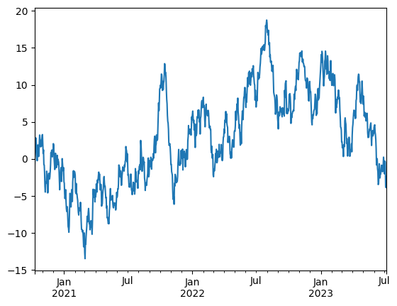
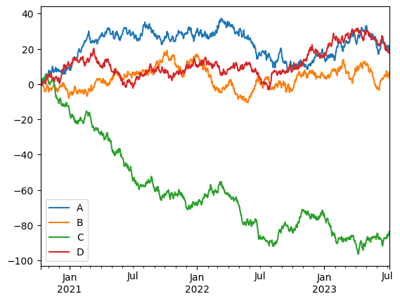
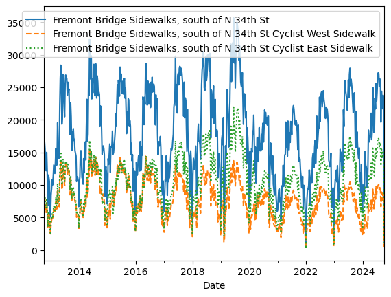

pandas#
import numpy as np
import pandas as pd
pd.__version__
'2.3.1'
quickstart#
df = pd.DataFrame({
'height':[1,2,3],
'score':[0,1,2]
})
df.sort_values(by='score', ascending=False)
| height | score | |
|---|---|---|
| 2 | 3 | 2 |
| 1 | 2 | 1 |
| 0 | 1 | 0 |
对象创建#
通过一个list创建 series，默认索引为RangeIndex
s = pd.Series([1,2, np.nan, 4])
s
0 1.0
1 2.0
2 NaN
3 4.0
dtype: float64
通过date_range创建df, 带有时间索引
dates = pd.date_range('20201010', periods=6)
dates
DatetimeIndex(['2020-10-10', '2020-10-11', '2020-10-12', '2020-10-13',
'2020-10-14', '2020-10-15'],
dtype='datetime64[us]', freq='D')
df = pd.DataFrame(
np.random.randn(6, 4),
index = dates,
columns = list('ABCD')
)
df
| A | B | C | D | |
|---|---|---|---|---|
| 2020-10-10 | -0.987835 | -0.300875 | 1.914156 | -0.911640 |
| 2020-10-11 | -1.806821 | 0.835906 | -0.331015 | 0.094304 |
| 2020-10-12 | 0.506742 | -0.020602 | 0.216988 | -2.628958 |
| 2020-10-13 | 0.967278 | 1.758684 | 0.758026 | -0.418628 |
| 2020-10-14 | -0.259991 | -0.165694 | 0.313832 | 0.581593 |
| 2020-10-15 | -0.324487 | -1.197632 | 1.761982 | -0.595702 |
通过字典创建 df
df2 = pd.DataFrame(
{
'A': 1.0,
'B': pd.Timestamp('20201010'),
'C': pd.Series(1, index=list(range(4)), dtype='float32'),
'D': np.array([3] * 4, dtype='int32'),
'E': pd.Categorical(['test','train', 'test', 'train']),
'F': 'FOO'
}
)
df2
| A | B | C | D | E | F | |
|---|---|---|---|---|---|---|
| 0 | 1.0 | 2020-10-10 | 1.0 | 3 | test | FOO |
| 1 | 1.0 | 2020-10-10 | 1.0 | 3 | train | FOO |
| 2 | 1.0 | 2020-10-10 | 1.0 | 3 | test | FOO |
| 3 | 1.0 | 2020-10-10 | 1.0 | 3 | train | FOO |
df2.dtypes
A float64
B datetime64[us]
C float32
D int32
E category
F str
dtype: object
dtypes#
pandas 会有逻辑类型和存储类型之分
select_dtypes的是逻辑类型dtypes是存储类型常见的，
number逻辑类型包含int64, float32等等；object包含object等strcategory: 常常应该把Object类型转换为这个，其他如lgbm才会处理booldatetime
df = pd.DataFrame(
{
"A": np.random.rand(3),
"B": 1,
"C": "foo",
"D": pd.Timestamp("20010102"),
"E": pd.Series([1.0] * 3).astype("float32"),
"F": False,
"G": pd.Series([1] * 3, dtype="int8"),
"H": pd.Series([1] * 3, dtype="int8"),
}
)
df
---------------------------------------------------------------------------
NameError Traceback (most recent call last)
Cell In[1], line 1
----> 1 df = pd.DataFrame(
2 {
3 "A": np.random.rand(3),
4 "B": 1,
5 "C": "foo",
6 "D": pd.Timestamp("20010102"),
7 "E": pd.Series([1.0] * 3).astype("float32"),
8 "F": False,
9 "G": pd.Series([1] * 3, dtype="int8"),
10 "H": pd.Series([1] * 3, dtype="int8"),
11 }
12 )
NameError: name 'pd' is not defined
df.dtypes
A float64
B int64
C str
D datetime64[us]
E float32
F bool
G int8
dtype: object
df.select_dtypes(include=['str'])
| C | |
|---|---|
| 0 | foo |
| 1 | foo |
| 2 | foo |
df.select_dtypes(include=['number'])
| A | B | E | G | |
|---|---|---|---|---|
| 0 | 0.910442 | 1 | 1.0 | 1 |
| 1 | 0.504557 | 1 | 1.0 | 1 |
| 2 | 0.071116 | 1 | 1.0 | 1 |
view data#
df.head()
| A | B | C | D | |
|---|---|---|---|---|
| 2020-10-10 | -0.987835 | -0.300875 | 1.914156 | -0.911640 |
| 2020-10-11 | -1.806821 | 0.835906 | -0.331015 | 0.094304 |
| 2020-10-12 | 0.506742 | -0.020602 | 0.216988 | -2.628958 |
| 2020-10-13 | 0.967278 | 1.758684 | 0.758026 | -0.418628 |
| 2020-10-14 | -0.259991 | -0.165694 | 0.313832 | 0.581593 |
df.tail()
| A | B | C | D | |
|---|---|---|---|---|
| 2020-10-11 | -1.806821 | 0.835906 | -0.331015 | 0.094304 |
| 2020-10-12 | 0.506742 | -0.020602 | 0.216988 | -2.628958 |
| 2020-10-13 | 0.967278 | 1.758684 | 0.758026 | -0.418628 |
| 2020-10-14 | -0.259991 | -0.165694 | 0.313832 | 0.581593 |
| 2020-10-15 | -0.324487 | -1.197632 | 1.761982 | -0.595702 |
df.index
DatetimeIndex(['2020-10-10', '2020-10-11', '2020-10-12', '2020-10-13',
'2020-10-14', '2020-10-15'],
dtype='datetime64[us]', freq='D')
df.columns
Index(['A', 'B', 'C', 'D'], dtype='str')
df.to_numpy()
array([[-0.98783525, -0.30087463, 1.91415639, -0.91164047],
[-1.80682121, 0.83590589, -0.33101498, 0.0943043 ],
[ 0.50674201, -0.02060168, 0.21698811, -2.62895756],
[ 0.96727811, 1.75868444, 0.7580259 , -0.41862832],
[-0.25999123, -0.16569436, 0.31383164, 0.5815927 ],
[-0.32448715, -1.1976322 , 1.76198225, -0.59570173]])
df2.to_numpy()
array([[1.0, Timestamp('2020-10-10 00:00:00'), 1.0, 3, 'test', 'FOO'],
[1.0, Timestamp('2020-10-10 00:00:00'), 1.0, 3, 'train', 'FOO'],
[1.0, Timestamp('2020-10-10 00:00:00'), 1.0, 3, 'test', 'FOO'],
[1.0, Timestamp('2020-10-10 00:00:00'), 1.0, 3, 'train', 'FOO']],
dtype=object)
df.describe()
| A | B | C | D | |
|---|---|---|---|---|
| count | 6.000000 | 6.000000 | 6.000000 | 6.000000 |
| mean | -0.317519 | 0.151631 | 0.772328 | -0.646505 |
| std | 1.000081 | 1.020440 | 0.896591 | 1.105617 |
| min | -1.806821 | -1.197632 | -0.331015 | -2.628958 |
| 25% | -0.821998 | -0.267080 | 0.241199 | -0.832656 |
| 50% | -0.292239 | -0.093148 | 0.535929 | -0.507165 |
| 75% | 0.315059 | 0.621779 | 1.510993 | -0.033929 |
| max | 0.967278 | 1.758684 | 1.914156 | 0.581593 |
df.T
| 2020-10-10 | 2020-10-11 | 2020-10-12 | 2020-10-13 | 2020-10-14 | 2020-10-15 | |
|---|---|---|---|---|---|---|
| A | -0.987835 | -1.806821 | 0.506742 | 0.967278 | -0.259991 | -0.324487 |
| B | -0.300875 | 0.835906 | -0.020602 | 1.758684 | -0.165694 | -1.197632 |
| C | 1.914156 | -0.331015 | 0.216988 | 0.758026 | 0.313832 | 1.761982 |
| D | -0.911640 | 0.094304 | -2.628958 | -0.418628 | 0.581593 | -0.595702 |
df.sort_index(axis=1, ascending=False) # 索引（列）排序
| D | C | B | A | |
|---|---|---|---|---|
| 2020-10-10 | -0.911640 | 1.914156 | -0.300875 | -0.987835 |
| 2020-10-11 | 0.094304 | -0.331015 | 0.835906 | -1.806821 |
| 2020-10-12 | -2.628958 | 0.216988 | -0.020602 | 0.506742 |
| 2020-10-13 | -0.418628 | 0.758026 | 1.758684 | 0.967278 |
| 2020-10-14 | 0.581593 | 0.313832 | -0.165694 | -0.259991 |
| 2020-10-15 | -0.595702 | 1.761982 | -1.197632 | -0.324487 |
df.sort_values(by='B') # 行排序
| A | B | C | D | |
|---|---|---|---|---|
| 2020-10-15 | -0.324487 | -1.197632 | 1.761982 | -0.595702 |
| 2020-10-10 | -0.987835 | -0.300875 | 1.914156 | -0.911640 |
| 2020-10-14 | -0.259991 | -0.165694 | 0.313832 | 0.581593 |
| 2020-10-12 | 0.506742 | -0.020602 | 0.216988 | -2.628958 |
| 2020-10-11 | -1.806821 | 0.835906 | -0.331015 | 0.094304 |
| 2020-10-13 | 0.967278 | 1.758684 | 0.758026 | -0.418628 |
df.info()
selection#
[]#
df['A']
2020-10-10 -0.987835
2020-10-11 -1.806821
2020-10-12 0.506742
2020-10-13 0.967278
2020-10-14 -0.259991
2020-10-15 -0.324487
Freq: D, Name: A, dtype: float64
如果列名只包括字母、数、下户线，就可以这样获取
df.A
2020-10-10 -0.987835
2020-10-11 -1.806821
2020-10-12 0.506742
2020-10-13 0.967278
2020-10-14 -0.259991
2020-10-15 -0.324487
Freq: D, Name: A, dtype: float64
df[['A', 'B']]
| A | B | |
|---|---|---|
| 2020-10-10 | -0.987835 | -0.300875 |
| 2020-10-11 | -1.806821 | 0.835906 |
| 2020-10-12 | 0.506742 | -0.020602 |
| 2020-10-13 | 0.967278 | 1.758684 |
| 2020-10-14 | -0.259991 | -0.165694 |
| 2020-10-15 | -0.324487 | -1.197632 |
获取行
df[0:3]
| A | B | C | D | |
|---|---|---|---|---|
| 2020-10-10 | -0.987835 | -0.300875 | 1.914156 | -0.911640 |
| 2020-10-11 | -1.806821 | 0.835906 | -0.331015 | 0.094304 |
| 2020-10-12 | 0.506742 | -0.020602 | 0.216988 | -2.628958 |
loc#
dates[0]
Timestamp('2020-10-10 00:00:00')
df.loc[dates[0]]
A -0.987835
B -0.300875
C 1.914156
D -0.911640
Name: 2020-10-10 00:00:00, dtype: float64
df.loc[:, ['A', 'B']]
| A | B | |
|---|---|---|
| 2020-10-10 | -0.987835 | -0.300875 |
| 2020-10-11 | -1.806821 | 0.835906 |
| 2020-10-12 | 0.506742 | -0.020602 |
| 2020-10-13 | 0.967278 | 1.758684 |
| 2020-10-14 | -0.259991 | -0.165694 |
| 2020-10-15 | -0.324487 | -1.197632 |
注意第一个参数，是两边闭
df.loc['2020-10-10':'2020-10-13', ['A', 'B']]
| A | B | |
|---|---|---|
| 2020-10-10 | -0.987835 | -0.300875 |
| 2020-10-11 | -1.806821 | 0.835906 |
| 2020-10-12 | 0.506742 | -0.020602 |
| 2020-10-13 | 0.967278 | 1.758684 |
df.loc[dates[0], 'A']
np.float64(-0.9878352544417939)
df.at[dates[0], 'A']
np.float64(-0.9878352544417939)
at获取一个位置数值，和loc 等价的
iloc#
通过位置选择行
df.iloc[3]
A 0.967278
B 1.758684
C 0.758026
D -0.418628
Name: 2020-10-13 00:00:00, dtype: float64
df.iloc[:2, 1:]
| B | C | D | |
|---|---|---|---|
| 2020-10-10 | -0.300875 | 1.914156 | -0.911640 |
| 2020-10-11 | 0.835906 | -0.331015 | 0.094304 |
df.iloc[1,1]
np.float64(0.8359058858792715)
df.iat[1,1]
np.float64(0.8359058858792715)
bool indexing#
选择行，使列满足什么条件
df[df['A']>0]
| A | B | C | D | |
|---|---|---|---|---|
| 2020-10-12 | 0.506742 | -0.020602 | 0.216988 | -2.628958 |
| 2020-10-13 | 0.967278 | 1.758684 | 0.758026 | -0.418628 |
df[df>0]
| A | B | C | D | |
|---|---|---|---|---|
| 2020-10-10 | NaN | NaN | 1.914156 | NaN |
| 2020-10-11 | NaN | 0.835906 | NaN | 0.094304 |
| 2020-10-12 | 0.506742 | NaN | 0.216988 | NaN |
| 2020-10-13 | 0.967278 | 1.758684 | 0.758026 | NaN |
| 2020-10-14 | NaN | NaN | 0.313832 | 0.581593 |
| 2020-10-15 | NaN | NaN | 1.761982 | NaN |
df2 = df.copy()
df2["E"] = ["one", "one", "two", "three", "four", "three"]
df2
| A | B | C | D | E | |
|---|---|---|---|---|---|
| 2020-10-10 | -0.987835 | -0.300875 | 1.914156 | -0.911640 | one |
| 2020-10-11 | -1.806821 | 0.835906 | -0.331015 | 0.094304 | one |
| 2020-10-12 | 0.506742 | -0.020602 | 0.216988 | -2.628958 | two |
| 2020-10-13 | 0.967278 | 1.758684 | 0.758026 | -0.418628 | three |
| 2020-10-14 | -0.259991 | -0.165694 | 0.313832 | 0.581593 | four |
| 2020-10-15 | -0.324487 | -1.197632 | 1.761982 | -0.595702 | three |
df[df2['E'].isin(['two','four'])]
| A | B | C | D | |
|---|---|---|---|---|
| 2020-10-12 | 0.506742 | -0.020602 | 0.216988 | -2.628958 |
| 2020-10-14 | -0.259991 | -0.165694 | 0.313832 | 0.581593 |
set value#
s1 = pd.Series(
[1,2,3,4,5,6],
index = pd.date_range('20201010', periods=6)
)
s1
2020-10-10 1
2020-10-11 2
2020-10-12 3
2020-10-13 4
2020-10-14 5
2020-10-15 6
Freq: D, dtype: int64
为df设置一个新列
df['F'] = s1
df
| A | B | C | D | F | |
|---|---|---|---|---|---|
| 2020-10-10 | -0.987835 | -0.300875 | 1.914156 | -0.911640 | 1 |
| 2020-10-11 | -1.806821 | 0.835906 | -0.331015 | 0.094304 | 2 |
| 2020-10-12 | 0.506742 | -0.020602 | 0.216988 | -2.628958 | 3 |
| 2020-10-13 | 0.967278 | 1.758684 | 0.758026 | -0.418628 | 4 |
| 2020-10-14 | -0.259991 | -0.165694 | 0.313832 | 0.581593 | 5 |
| 2020-10-15 | -0.324487 | -1.197632 | 1.761982 | -0.595702 | 6 |
df.at[dates[0], 'A'] = 0
df
| A | B | C | D | F | |
|---|---|---|---|---|---|
| 2020-10-10 | 0.000000 | -0.300875 | 1.914156 | -0.911640 | 1 |
| 2020-10-11 | -1.806821 | 0.835906 | -0.331015 | 0.094304 | 2 |
| 2020-10-12 | 0.506742 | -0.020602 | 0.216988 | -2.628958 | 3 |
| 2020-10-13 | 0.967278 | 1.758684 | 0.758026 | -0.418628 | 4 |
| 2020-10-14 | -0.259991 | -0.165694 | 0.313832 | 0.581593 | 5 |
| 2020-10-15 | -0.324487 | -1.197632 | 1.761982 | -0.595702 | 6 |
df.loc[:, 'D'] = np.array([5] * len(df))
df
| A | B | C | D | F | |
|---|---|---|---|---|---|
| 2020-10-10 | 0.000000 | -0.300875 | 1.914156 | 5.0 | 1 |
| 2020-10-11 | -1.806821 | 0.835906 | -0.331015 | 5.0 | 2 |
| 2020-10-12 | 0.506742 | -0.020602 | 0.216988 | 5.0 | 3 |
| 2020-10-13 | 0.967278 | 1.758684 | 0.758026 | 5.0 | 4 |
| 2020-10-14 | -0.259991 | -0.165694 | 0.313832 | 5.0 | 5 |
| 2020-10-15 | -0.324487 | -1.197632 | 1.761982 | 5.0 | 6 |
我们也可以使用bool条件设置
df2 = df.copy()
df2[df2 > 0] = -df2
df2
| 0 | 1 | 2 | 3 | target | |
|---|---|---|---|---|---|
| 0 | -0.964237 | -0.573508 | -1.109884 | -1.506903 | -0.348507 |
| 1 | -1.361796 | -1.311485 | -0.361705 | -1.636924 | -0.449459 |
| 2 | -1.122803 | -2.252449 | -1.261629 | -0.575619 | -0.157774 |
例子：
df = pd.DataFrame(np.random.randn(3,4))
df
| 0 | 1 | 2 | 3 | |
|---|---|---|---|---|
| 0 | -1.098862 | 0.859736 | 0.448311 | -0.563639 |
| 1 | 0.359723 | 0.063172 | 1.273104 | 0.212454 |
| 2 | -0.162782 | 0.734354 | -0.368384 | -0.874321 |
df.index
RangeIndex(start=0, stop=3, step=1)
df.columns
RangeIndex(start=0, stop=4, step=1)
df[1]
0 0.859736
1 0.063172
2 0.734354
Name: 1, dtype: float64
missing data#
np.nan 表示缺失值
df1 = df.reindex(index=dates[0:4], columns=list(df.columns) + ['E'])
df1
| A | B | C | D | F | E | |
|---|---|---|---|---|---|---|
| 2020-10-10 | 0.000000 | -0.300875 | 1.914156 | 5.0 | 1 | NaN |
| 2020-10-11 | -1.806821 | 0.835906 | -0.331015 | 5.0 | 2 | NaN |
| 2020-10-12 | 0.506742 | -0.020602 | 0.216988 | 5.0 | 3 | NaN |
| 2020-10-13 | 0.967278 | 1.758684 | 0.758026 | 5.0 | 4 | NaN |
reindex 支持我们动态在指定轴上 修改索引
df1.loc[dates[0]:dates[1], 'E'] = 1
df1
| A | B | C | D | F | E | |
|---|---|---|---|---|---|---|
| 2020-10-10 | 0.000000 | -0.300875 | 1.914156 | 5.0 | 1 | 1.0 |
| 2020-10-11 | -1.806821 | 0.835906 | -0.331015 | 5.0 | 2 | 1.0 |
| 2020-10-12 | 0.506742 | -0.020602 | 0.216988 | 5.0 | 3 | NaN |
| 2020-10-13 | 0.967278 | 1.758684 | 0.758026 | 5.0 | 4 | NaN |
dropna丢弃行,
df1.dropna(how='any')
| A | B | C | D | F | E | |
|---|---|---|---|---|---|---|
| 2020-10-10 | 0.000000 | -0.300875 | 1.914156 | 5.0 | 1 | 1.0 |
| 2020-10-11 | -1.806821 | 0.835906 | -0.331015 | 5.0 | 2 | 1.0 |
df1.fillna(value=2)
| A | B | C | D | F | E | |
|---|---|---|---|---|---|---|
| 2020-10-10 | 0.000000 | -0.300875 | 1.914156 | 5.0 | 1 | 1.0 |
| 2020-10-11 | -1.806821 | 0.835906 | -0.331015 | 5.0 | 2 | 1.0 |
| 2020-10-12 | 0.506742 | -0.020602 | 0.216988 | 5.0 | 3 | 2.0 |
| 2020-10-13 | 0.967278 | 1.758684 | 0.758026 | 5.0 | 4 | 2.0 |
df.isna()
| A | B | C | D | F | |
|---|---|---|---|---|---|
| 2020-10-10 | False | False | False | False | False |
| 2020-10-11 | False | False | False | False | False |
| 2020-10-12 | False | False | False | False | False |
| 2020-10-13 | False | False | False | False | False |
| 2020-10-14 | False | False | False | False | False |
| 2020-10-15 | False | False | False | False | False |
operations#
stats#
df
| A | B | C | D | F | |
|---|---|---|---|---|---|
| 2020-10-10 | 0.000000 | -0.300875 | 1.914156 | 5.0 | 1 |
| 2020-10-11 | -1.806821 | 0.835906 | -0.331015 | 5.0 | 2 |
| 2020-10-12 | 0.506742 | -0.020602 | 0.216988 | 5.0 | 3 |
| 2020-10-13 | 0.967278 | 1.758684 | 0.758026 | 5.0 | 4 |
| 2020-10-14 | -0.259991 | -0.165694 | 0.313832 | 5.0 | 5 |
| 2020-10-15 | -0.324487 | -1.197632 | 1.761982 | 5.0 | 6 |
df.mean()
A -0.152880
B 0.151631
C 0.772328
D 5.000000
F 3.500000
dtype: float64
df.mean(axis=1) # 行
2020-10-10 1.522656
2020-10-11 1.139614
2020-10-12 1.740626
2020-10-13 2.496798
2020-10-14 1.977629
2020-10-15 2.247973
Freq: D, dtype: float64
数据和索引不对齐，索引会自动延申
dates
DatetimeIndex(['2020-10-10', '2020-10-11', '2020-10-12', '2020-10-13',
'2020-10-14', '2020-10-15'],
dtype='datetime64[us]', freq='D')
s = pd.Series([1,2,3, np.nan, 7, 9], index=dates)
s
2020-10-10 1.0
2020-10-11 2.0
2020-10-12 3.0
2020-10-13 NaN
2020-10-14 7.0
2020-10-15 9.0
Freq: D, dtype: float64
沿着index做差
df.sub(s, axis='index')
| A | B | C | D | F | |
|---|---|---|---|---|---|
| 2020-10-10 | -1.000000 | -1.300875 | 0.914156 | 4.0 | 0.0 |
| 2020-10-11 | -3.806821 | -1.164094 | -2.331015 | 3.0 | 0.0 |
| 2020-10-12 | -2.493258 | -3.020602 | -2.783012 | 2.0 | 0.0 |
| 2020-10-13 | NaN | NaN | NaN | NaN | NaN |
| 2020-10-14 | -7.259991 | -7.165694 | -6.686168 | -2.0 | -2.0 |
| 2020-10-15 | -9.324487 | -10.197632 | -7.238018 | -4.0 | -3.0 |
user defined functions#
agg简化结果，进行了聚合 。 自定义函数参数为列，返回为列结果transform对每一个元素进行转换。 自定义函数参数为元素额，
df
| A | B | C | D | F | |
|---|---|---|---|---|---|
| 2020-10-10 | 0.000000 | -0.300875 | 1.914156 | 5.0 | 1 |
| 2020-10-11 | -1.806821 | 0.835906 | -0.331015 | 5.0 | 2 |
| 2020-10-12 | 0.506742 | -0.020602 | 0.216988 | 5.0 | 3 |
| 2020-10-13 | 0.967278 | 1.758684 | 0.758026 | 5.0 | 4 |
| 2020-10-14 | -0.259991 | -0.165694 | 0.313832 | 5.0 | 5 |
| 2020-10-15 | -0.324487 | -1.197632 | 1.761982 | 5.0 | 6 |
df.agg(lambda x: np.mean(x) * 2) # 列转换为了 均值的平方
A -0.305760
B 0.303262
C 1.544656
D 10.000000
F 7.000000
dtype: float64
df.transform(lambda x: x * 101.2) # 对每个元素做了统一变化
| A | B | C | D | F | |
|---|---|---|---|---|---|
| 2020-10-10 | 0.000000 | -30.448513 | 193.712626 | 506.0 | 101.2 |
| 2020-10-11 | -182.850307 | 84.593676 | -33.498716 | 506.0 | 202.4 |
| 2020-10-12 | 51.282292 | -2.084890 | 21.959197 | 506.0 | 303.6 |
| 2020-10-13 | 97.888545 | 177.978865 | 76.712221 | 506.0 | 404.8 |
| 2020-10-14 | -26.311112 | -16.768269 | 31.759762 | 506.0 | 506.0 |
| 2020-10-15 | -32.838099 | -121.200379 | 178.312604 | 506.0 | 607.2 |
value_counts#
s = pd.Series(np.random.randint(0,7, size=10))
s.value_counts()
4 3
3 2
1 2
2 1
0 1
6 1
Name: count, dtype: int64
统计百分比
s.value_counts(normalize=True)
string method#
Series配备了.str方法， 更好进行变换
s = pd.Series(["A", "B", "C", "Aaba", "Baca", np.nan, "CABA", "dog", "cat"])
s
0 A
1 B
2 C
3 Aaba
4 Baca
5 NaN
6 CABA
7 dog
8 cat
dtype: str
s.str.lower()
0 a
1 b
2 c
3 aaba
4 baca
5 NaN
6 caba
7 dog
8 cat
dtype: str
merge#
concat#
df = pd.DataFrame(np.random.randn(10,4))
df
| 0 | 1 | 2 | 3 | |
|---|---|---|---|---|
| 0 | -0.602090 | 0.550267 | -1.223086 | -0.444570 |
| 1 | -0.633155 | -0.346444 | -0.660296 | -1.540638 |
| 2 | 0.300601 | 1.815010 | -0.168324 | -1.224505 |
| 3 | -1.720432 | 1.502249 | 0.178592 | 0.913841 |
| 4 | 0.151822 | 0.039237 | -0.553416 | 0.958658 |
| 5 | -0.305660 | -0.387923 | -1.518987 | -0.189006 |
| 6 | 1.026909 | 0.803875 | 0.926005 | 0.364731 |
| 7 | -1.869858 | 0.775665 | -0.554072 | 0.058960 |
| 8 | -0.744252 | -0.026305 | -0.445575 | -0.075493 |
| 9 | -0.391757 | 0.587830 | 0.190065 | 0.122111 |
pieces = [df[:3], df[3:5], df[5:]]
pd.concat(pieces)
| 0 | 1 | 2 | 3 | |
|---|---|---|---|---|
| 0 | -0.602090 | 0.550267 | -1.223086 | -0.444570 |
| 1 | -0.633155 | -0.346444 | -0.660296 | -1.540638 |
| 2 | 0.300601 | 1.815010 | -0.168324 | -1.224505 |
| 3 | -1.720432 | 1.502249 | 0.178592 | 0.913841 |
| 4 | 0.151822 | 0.039237 | -0.553416 | 0.958658 |
| 5 | -0.305660 | -0.387923 | -1.518987 | -0.189006 |
| 6 | 1.026909 | 0.803875 | 0.926005 | 0.364731 |
| 7 | -1.869858 | 0.775665 | -0.554072 | 0.058960 |
| 8 | -0.744252 | -0.026305 | -0.445575 | -0.075493 |
| 9 | -0.391757 | 0.587830 | 0.190065 | 0.122111 |
join#
how参数:表明保留哪些行。
inner: 保留共有字段outer: 并集left: 左表所有键
left = pd.DataFrame({
'key':['foo','bar', 'bob'],
'lval': [1,2, 3]
})
right = pd.DataFrame({
'key':['foo','bar'],
'rval': [1,2]
})
pd.merge(left, right, on='key', how='left')
| key | lval | rval | |
|---|---|---|---|
| 0 | foo | 1 | 1.0 |
| 1 | bar | 2 | 2.0 |
| 2 | bob | 3 | NaN |
pd.merge(left, right, on='key', how='inner')
| key | lval | rval | |
|---|---|---|---|
| 0 | foo | 1 | 1 |
| 1 | bar | 2 | 2 |
pd.merge(left, right, on='key', how='outer')
| key | lval | rval | |
|---|---|---|---|
| 0 | bar | 2 | 2.0 |
| 1 | bob | 3 | NaN |
| 2 | foo | 1 | 1.0 |
group分组#
指定by;
选择一些列；
apply function
聚合
df = pd.DataFrame({
'A': ['one', 'two', 'three'],
'B': ['foo', 'bob', 'alice'],
'C': np.random.randn(3),
'D': np.random.randn(3)
})
df
| A | B | C | D | |
|---|---|---|---|---|
| 0 | one | foo | -0.407880 | 0.037157 |
| 1 | two | bob | 1.395543 | 1.246526 |
| 2 | three | alice | -1.279270 | 1.019978 |
df.groupby(by='A')[['B', 'C']].sum()
| B | C | |
|---|---|---|
| A | ||
| one | foo | -0.407880 |
| three | alice | -1.279270 |
| two | bob | 1.395543 |
df.groupby(by='A')['B'].sum() # 只选择B列
A
one foo
three alice
two bob
Name: B, dtype: str
多级行索引
df.groupby(by=['A','B']).sum()
| C | D | ||
|---|---|---|---|
| A | B | ||
| one | foo | -0.407880 | 0.037157 |
| three | alice | -1.279270 | 1.019978 |
| two | bob | 1.395543 | 1.246526 |
reshaping#
stack#
arrays = [
['foo', 'bar', 'alice'],
['one', 'two', 'three']
]
index = pd.MultiIndex.from_arrays(
arrays,
)
df = pd.DataFrame(
np.random.randn(3, 2),
index = index,
columns = ['A', 'B']
)
df
| A | B | ||
|---|---|---|---|
| foo | one | 0.501621 | 0.045875 |
| bar | two | 0.967446 | -1.766177 |
| alice | three | -1.287660 | -0.256039 |
df.stack()
foo one A 0.501621
B 0.045875
bar two A 0.967446
B -1.766177
alice three A -1.287660
B -0.256039
dtype: float64
df.unstack()
| A | B | |||||
|---|---|---|---|---|---|---|
| one | three | two | one | three | two | |
| alice | NaN | -1.28766 | NaN | NaN | -0.256039 | NaN |
| bar | NaN | NaN | 0.967446 | NaN | NaN | -1.766177 |
| foo | 0.501621 | NaN | NaN | 0.045875 | NaN | NaN |
pivot tables#
time series#
rng = pd.date_range(start='20201010', periods=10)
rng
DatetimeIndex(['2020-10-10', '2020-10-11', '2020-10-12', '2020-10-13',
'2020-10-14', '2020-10-15', '2020-10-16', '2020-10-17',
'2020-10-18', '2020-10-19'],
dtype='datetime64[us]', freq='D')
ts = pd.Series(
np.random.randint(0, 10, len(rng)),
index = rng
)
categoricals#
df = pd.DataFrame({
'id': [1,2,3,4],
'raw_grade': ['a', 'b', 'c', 'd']
})
df['raw_grade']
0 a
1 b
2 c
3 d
Name: raw_grade, dtype: str
我们可以将其转化为categorical类型
df['grade'] = df['raw_grade'].astype('category')
df['grade']
0 a
1 b
2 c
3 d
Name: grade, dtype: category
Categories (4, str): ['a', 'b', 'c', 'd']
df
| id | raw_grade | grade | |
|---|---|---|---|
| 0 | 1 | a | a |
| 1 | 2 | b | b |
| 2 | 3 | c | c |
| 3 | 4 | d | d |
categorical应该具有更好的名称
df['grade'] = df['grade'].cat.rename_categories(['very good', 'good', 'very bad', 'worst'])
排序是按照类别的顺序，不是词汇顺序
df.sort_values(by='grade')
| id | raw_grade | grade | |
|---|---|---|---|
| 0 | 1 | a | very good |
| 1 | 2 | b | good |
| 2 | 3 | c | very bad |
| 3 | 4 | d | worst |
plotting#
import matplotlib.pyplot as plt
plt.close('all')
ts = pd.Series(
np.random.randn(1000),
index = pd.date_range('20201010', periods=1000)
)
ts
2020-10-10 -0.855467
2020-10-11 1.356744
2020-10-12 1.353603
2020-10-13 0.987404
2020-10-14 -0.424806
...
2023-07-02 1.719214
2023-07-03 -0.172318
2023-07-04 -3.198644
2023-07-05 -0.207917
2023-07-06 1.494452
Freq: D, Length: 1000, dtype: float64
ts = ts.cumsum() # 累积求和
ts.plot()
<Axes: >

df = pd.DataFrame(
np.random.randn(1000, 4),
index=ts.index,
columns = ['A', 'B', 'C', 'D']
)
df = df.cumsum()
df.plot()
plt.legend()
<matplotlib.legend.Legend at 0x2429e12a5d0>

copy#
防止连带修改， 很多时候， 我们不小心会修改到原数据，不希望的
app_train_domain = app_train.copy() 另一份拷贝
数据结构#
增强版的 NumPy 结构化数组
print(res.shape) # 返回 (N,) 表示 Series，返回 (N, M) 表示 DataFrame
3.2.1 Series 对象#
初识#
Series对象 带有索引的 一维数组。
通过 .index 和 .values 属性访问
values返回类np数组
index返回pd.index对象
data = pd.Series([0.25, 0.5, 0.1, 0.2])
values = data.values
index = data.index
data[1]
data[1:3]
1 0.5
2 0.1
dtype: float64
Series灵活的特性 ： 数组和字典。#
与np数组最大不同：Series对象是显示的索引，索引可以是任意类型。
Series对象是特殊的字典。特殊：一类数据映射到另一类数据。
就像np数组比py列表高效一样， Series对象比py字典会高效。
因此可以从py字典创建一个Series对象
因为具有数组和字典双重特性 所以可以对字典进行切片操作！！
创建Series对象 pd.Series(data, index = index)
data = pd.Series([0.25, 0.5, 0.1, 0.2],
index = ['a', 'b', 'c', 'd'], name='score') # name在合并df时候标记为列名
data
a 0.25
b 0.50
c 0.10
d 0.20
Name: score, dtype: float64
popular_dict = {
'California': 38332521,
'Texas': 26448193,
'New York': 19651127,
'Florida': 19552860,
'Illinois': 12882135
}
population = pd.Series(popular_dict)
population
California 38332521
Texas 26448193
New York 19651127
Florida 19552860
Illinois 12882135
dtype: int64
population['California' : 'Florida']
California 38332521
Texas 26448193
New York 19651127
Florida 19552860
dtype: int64
pd.Series([2, 4, 6]) # 列表或者np数组
pd.Series(5, index = [1,2,3]) # 标量 , 填充到每个索引上
pd.Series({1 : 'A', 2 : 'B'})
1 A
2 B
dtype: object
3.2.2 DataFrame对象#
与Series对象一样，数组和字典双重特性。
DataFrame对象既有行索引又有列索引。是具有同样索引Series对象的集合
DataFrame 的基本索引是列索引, 直接[]访问的是列
数组角度#
如何获取一行数据？不能直接通过[]这样索引，而是loc。
因为这个每一列是一个元素（series)，[]是访问列的
# 创建一个只有列名没有数据的
pd.DataFrame(columns=['col1', 'col2'])
| col1 | col2 |
|---|
# 创建一个只有列名没有数据，但指定类型
pd.DataFrame({
'id':pd.Series(dtype=int),
'name':pd.Series(dtype=str)
})
| id | name |
|---|
import pandas as pd
area_dict = {'California': 423967, 'Texas': 695662, 'New York': 141297,
'Florida': 170312, 'Illinois': 149995}
area = pd.Series(area_dict)
states = pd.DataFrame({'population' : population, 'area' : area})
states
| population | area | |
|---|---|---|
| California | 38332521 | 423967 |
| Texas | 26448193 | 695662 |
| New York | 19651127 | 141297 |
| Florida | 19552860 | 170312 |
| Illinois | 12882135 | 149995 |
states.columns
states.index
Index(['California', 'Texas', 'New York', 'Florida', 'Illinois'], dtype='object')
states.values # 返回对应的数组
---------------------------------------------------------------------------
NameError Traceback (most recent call last)
Cell In[2], line 1
----> 1 states.values # 返回对应的数组
NameError: name 'states' is not defined
# 改列名
df.rename(columns={'旧列名': '新列名'}, inplace=True)
# 改行索引名
df.rename(index={'旧行名': '新行名'}, inplace=True)
字典角度#
注意不能直接通过行名获取，因为字典看来，字段是列名！
states['area']
#states['Texas'] # !!
California 423967
Texas 695662
New York 141297
Florida 170312
Illinois 149995
Name: area, dtype: int64
创建DataFram对象#
pd.DataFrame(population, columns=['population']) # 通过一个series对象创建
pd.DataFrame([ {'a' : i, 'b' : 2 * i} for i in range(4)]) # 元素是字典的列表
pd.DataFrame([{'a':1, 'b':2}, {'c':3, 'd':4}])
pd.DataFrame({'population' : population, 'area' : area}) # 具有同样索引多个series对象
pd.DataFrame(np.random.rand(3,2), columns = ['foo', 'bar'], index = ['a', 'b', 'c']) # np二维数组,指定行索引index,列索引columns
A = np.zeros(3, dtype=[('A', 'i8'), ('B', 'f8')])
pd.DataFrame(A) # 从np结构化数组构建
| A | B | |
|---|---|---|
| 0 | 0 | 0.0 |
| 1 | 0 | 0.0 |
| 2 | 0 | 0.0 |
3.2.3 Index对象#
可以看作是 不可变数组 或 有序集合。
默认索引是RangeIndex,
ind = pd.Index([2, 3, 5, 7])
ind
Index([2, 3, 5, 7], dtype='int64')
ind.to_list()
[2, 3, 5, 7]
从不可变数组角度:类似np数组#
值不可修改！
ind[1]
ind[::2]
print(ind.shape, ind.size, ind.ndim, ind.dtype)
(4,) 4 1 int64
# ind[1] = 0
从有序集合角度：#
可以使用集合操作。 但必须size相同！
indA = pd.Index([1, 3, 2, 5])
indB = pd.Index([1, 2, 4, 6])
indA | indB
Index([1, 3, 6, 7], dtype='int64')
so, 可以for
for i in ind:
print(i)
2
3
5
7
基本功能#
pandas 一般都不会原地修改
函数应用#
将自己或者其他库函数应到pd对象
统计特征函数#
都会保留索引的，值为df
sum;quantile();mean()mapskew,偏度，分布是否对称， 偏左<0。kurt峰度。以正太分布基准，数据集中程度。尖峰>0
rng = np.random.RandomState(42)
s = pd.Series(rng.randint(0, 10, 4))
s
0 6
1 3
2 7
3 4
dtype: int32
s = pd.Series([2.1, 3.2,3,4])
s.quantile(0.25) # 直接调用接口
np.float64(2.775)
df = pd.DataFrame(rng.randint(0,10, (3,4)), columns=['A', 'B', 'C', 'D'])
df
np.exp(s)
np.sin(df)
---------------------------------------------------------------------------
NameError Traceback (most recent call last)
Cell In[53], line 1
----> 1 np.exp(s)
2 np.sin(df)
NameError: name 's' is not defined
Matching / broadcasting behavior#
没有对齐的数据缺失值用NAN填充，或者设置参数fill_value
# 索引不同的两个Series对象
area = pd.Series({'Alaska': 1723337, 'Texas': 695662,
'California': 423967}, name='area')
population = pd.Series({'California': 38332521, 'Texas': 26448193,
'New York': 19651127}, name='population')
population / area
population.divide(area, fill_value = 0)
Alaska 0.000000
California 90.413926
New York inf
Texas 38.018740
dtype: float64
df1 = pd.DataFrame(rng.randint(0,10, (3,4)), columns=['A', 'B', 'C', 'D'])
df2 = pd.DataFrame(rng.randint(0,10, (4,2)), columns=['A', 'F'])
print(df1, '\n', df2)
df1.add(df2, fill_value=0)
使用均值填充！ stack将二维数组压成一维
fill = df2.stack().mean()
df1.add(df2, fill_value = fill)
A = rng.randint(10, size=(3, 4))
A
df = pd.DataFrame(A, columns=list('QRST'))
df
df - df.loc[0]
df.subtract(df['R'], axis=0)
IO#
Feather#
csv存储是为了用户的，但要在不同阶段传递，比如特征工程各阶段。那么csv会损坏数据类型，且速度慢
feather提供了df的序列化和反序列化，几乎是内存保存
import pytz
df = pd.DataFrame(
{
"a": list("abc"),
"b": list(range(1, 4)),
"c": np.arange(3, 6).astype("u1"),
"d": np.arange(4.0, 7.0, dtype="float64"),
"e": [True, False, True],
"f": pd.Categorical(list("abc")),
"g": pd.date_range("20130101", periods=3),
"h": pd.date_range("20130101", periods=3, tz=pytz.timezone("US/Eastern")),
"i": pd.date_range("20130101", periods=3, freq="ns"),
})
df.dtypes
a str
b int64
c uint8
d float64
e bool
f category
g datetime64[us]
h datetime64[us, US/Eastern]
i datetime64[ns]
dtype: object
df.to_feather('example.feather')
result = pd.read_feather('example.feather')
result.dtypes
a str
b int64
c uint8
d float64
e bool
f category
g datetime64[us]
h datetime64[us, US/Eastern]
i datetime64[ns]
dtype: object
align 对齐#
join
inner,outer,left
s = pd.Series(np.random.randn(5), index=['a', 'b', 'c', 'd', 'e'])
print(s)
s1 = s[:3]
s2 = s[1:]
print(s1)
print(s2)
a -0.440754
b -0.967044
c -0.343204
d 1.479043
e -0.125159
dtype: float64
a -0.440754
b -0.967044
c -0.343204
dtype: float64
b -0.967044
c -0.343204
d 1.479043
e -0.125159
dtype: float64
# 交集
s1, s2 = s1.align(s2, join='inner')
print(s1, s2)
b -0.967044
c -0.343204
dtype: float64 b -0.967044
c -0.343204
dtype: float64
read_csv
# 读取网页内table标签内容，返回table列表，可能多个table
# 需要lxml底层库 解析网页
pd.read_html()
# pd.read_csv('.csv', sep='|', index_col='')
# pd.read_csv('URL', sep='|', index_col='')
# pd.read_csv('URL', sep=r'\s+')
#df.head(10)
#users.tail(10)
#users.describe(include='all')
# train_data[['col1', 'col2', 'col3']].describe()
include 不能直接通过列名
Indexing and selecting data#
索引方式#
lociloc[]
Boolean index#
|or&and~not必须括号分组
这与numpy相同
s = pd.Series(range(-3, 4))
s[s>0]
4 1
5 2
6 3
dtype: int64
s[(s<1) | (s>2)]
0 -3
1 -2
2 -1
3 0
6 3
dtype: int64
dates = pd.date_range('1/1/2020', periods=8)
df = pd.DataFrame(
np.random.randn(8,4),
index = dates,
columns = ['a', 'b', 'c', 'd']
)
df[df['a'] > 0]
| a | b | c | d | |
|---|---|---|---|---|
| 2020-01-03 | 0.180091 | 0.673043 | -0.416968 | -1.834319 |
| 2020-01-05 | 0.679155 | -0.557629 | 0.388789 | 0.699663 |
| 2020-01-06 | 1.341901 | 1.036003 | -0.096680 | 0.157641 |
| 2020-01-08 | 0.678832 | -1.018873 | 0.447808 | 1.362020 |
df2 = pd.DataFrame({'a': ['one', 'one', 'two', 'three', 'two', 'one', 'six'],
'b': ['x', 'y', 'y', 'x', 'y', 'x', 'x'],
'c': np.random.randn(7)})
df2
| a | b | c | |
|---|---|---|---|
| 0 | one | x | 0.235107 |
| 1 | one | y | 0.455529 |
| 2 | two | y | 1.187247 |
| 3 | three | x | -0.776355 |
| 4 | two | y | -0.572664 |
| 5 | one | x | 1.399288 |
| 6 | six | x | 0.555768 |
例子：各种筛选#
import pandas as pd
data = {
'AGE': [25, 45, 30],
'LOAN': [1000, 5000, 2000],
'OVERDUE': [0, 1, 0]
}
df = pd.DataFrame(data, index=['User_A', 'User_B', 'User_C'])
df
| AGE | LOAN | OVERDUE | |
|---|---|---|---|
| User_A | 25 | 1000 | 0 |
| User_B | 45 | 5000 | 1 |
| User_C | 30 | 2000 | 0 |
筛选行: 符合条件的行
df[df['LOAN'] > 2000]
| AGE | LOAN | OVERDUE | |
|---|---|---|---|
| User_B | 45 | 5000 | 1 |
筛选列名: 比如corr矩阵
df = pd.DataFrame(np.random.randn(4,4), index=list('abcd'), columns=list('abcd'))
corr = df.corr()
corr = corr.abs()
corr
| a | b | c | d | |
|---|---|---|---|---|
| a | 1.000000 | 0.558091 | 0.349060 | 0.767784 |
| b | 0.558091 | 1.000000 | 0.488331 | 0.326215 |
| c | 0.349060 | 0.488331 | 1.000000 | 0.650923 |
| d | 0.767784 | 0.326215 | 0.650923 | 1.000000 |
corr.columns[corr['c'] > 0.6] #
Index(['c', 'd'], dtype='str')
筛选行名：比如想知道符合条件的id
corr.index[corr['c'] > 0.6] # 找到了和c 相关系数大于0.6的特征
Index(['c', 'd'], dtype='str')
astype(bool)#
非0即True
NaN是True
df = pd.DataFrame(
{
'A': np.arange(4),
'b': np.random.randn(4),
'c': [np.nan for i in range(4)]
}
)
df
| A | b | c | |
|---|---|---|---|
| 0 | 0 | -1.004799 | NaN |
| 1 | 1 | 0.562132 | NaN |
| 2 | 2 | 0.890005 | NaN |
| 3 | 3 | 0.559909 | NaN |
df.astype(bool)
| A | b | c | |
|---|---|---|---|
| 0 | False | True | True |
| 1 | True | True | True |
| 2 | True | True | True |
| 3 | True | True | True |
where#
快速where update
df = pd.DataFrame(
np.random.randn(6,4),
)
df
| 0 | 1 | 2 | 3 | |
|---|---|---|---|---|
| 0 | -0.616614 | -0.657717 | -0.025098 | -0.480370 |
| 1 | -0.368138 | -0.341348 | -2.326300 | 0.454195 |
| 2 | 1.261347 | 2.296435 | 1.386900 | -0.867184 |
| 3 | -0.364546 | -1.276686 | -0.822064 | -1.099228 |
| 4 | 1.197151 | 0.670332 | -0.009173 | -0.483234 |
| 5 | 0.429132 | -0.108743 | 1.044581 | -0.361712 |
df.where(df<0.3, 88)
| 0 | 1 | 2 | 3 | |
|---|---|---|---|---|
| 0 | -0.616614 | -0.657717 | -0.025098 | -0.480370 |
| 1 | -0.368138 | -0.341348 | -2.326300 | 88.000000 |
| 2 | 88.000000 | 88.000000 | 88.000000 | -0.867184 |
| 3 | -0.364546 | -1.276686 | -0.822064 | -1.099228 |
| 4 | 88.000000 | 88.000000 | -0.009173 | -0.483234 |
| 5 | 88.000000 | -0.108743 | 88.000000 | -0.361712 |
df.where(df<0.3) # 默认变为NaN
| 0 | 1 | 2 | 3 | |
|---|---|---|---|---|
| 0 | -0.616614 | -0.657717 | -0.025098 | -0.480370 |
| 1 | -0.368138 | -0.341348 | -2.326300 | NaN |
| 2 | NaN | NaN | NaN | -0.867184 |
| 3 | -0.364546 | -1.276686 | -0.822064 | -1.099228 |
| 4 | NaN | NaN | -0.009173 | -0.483234 |
| 5 | NaN | -0.108743 | NaN | -0.361712 |
reset索引#
df = pd.DataFrame(
data = np.random.randn(6,2),
index = pd.date_range('20201010', periods=6),
columns = ['area', 'pop']
)
df
| area | pop | |
|---|---|---|
| 2020-10-10 | 1.183677 | 1.191695 |
| 2020-10-11 | -0.410622 | 0.811568 |
| 2020-10-12 | -0.237822 | -1.234384 |
| 2020-10-13 | -0.619160 | 1.917208 |
| 2020-10-14 | 0.030715 | 0.243250 |
| 2020-10-15 | 3.830778 | -0.931668 |
reset_index 将索引重置为简单的整数索引， 原index转为列
df.reset_index()
| index | area | pop | |
|---|---|---|---|
| 0 | 2020-10-10 | 1.183677 | 1.191695 |
| 1 | 2020-10-11 | -0.410622 | 0.811568 |
| 2 | 2020-10-12 | -0.237822 | -1.234384 |
| 3 | 2020-10-13 | -0.619160 | 1.917208 |
| 4 | 2020-10-14 | 0.030715 | 0.243250 |
| 5 | 2020-10-15 | 3.830778 | -0.931668 |
3.3 数据取值与选择#
3.3.1 Series对象#
1. 作为字典#
data = pd.Series([0.25, 0.5, 0.75, 1.0],index=['a', 'b', 'c', 'd'])
data
---------------------------------------------------------------------------
NameError Traceback (most recent call last)
Cell In[2], line 1
----> 1 data = pd.Series([0.25, 0.5, 0.75, 1.0],index=['a', 'b', 'c', 'd'])
2 data
NameError: name 'pd' is not defined
'a' in data
data.keys()
list(data.items())
---------------------------------------------------------------------------
NameError Traceback (most recent call last)
Cell In[3], line 1
----> 1 'a' in data
2 data.keys()
3 list(data.items())
NameError: name 'data' is not defined
data['e'] = 1.2 #添加索引和数据
2. 作为数组#
data['a':'c']
a 0.25
b 0.50
c 0.75
dtype: float64
data[0:2] # 隐式整数索引
a 0.25
b 0.50
dtype: float64
data > 0.5
a False
b False
c True
d True
e True
dtype: bool
data[data > 0.5]
c 0.75
d 1.00
e 1.20
dtype: float64
data[['a', 'e']] # 花哨索引
a 0.25
e 1.20
dtype: float64
3. 索引器 loc, ilod, ix#
data.loc['a'] # 显示索引
data.iloc[1]
np.float64(0.5)
3.3.2 DataFrame数据选择方法#
for 返回的是列名
插入一列
#train_dataset.insert(0, "WAGE", y_train)
1. DataFrame作为字典, value是Series对象#
import pandas as pd
area = pd.Series({'California': 423967, 'Texas': 695662,
'New York': 141297, 'Florida': 170312,
'Illinois': 149995})
pop = pd.Series({'California': 38332521, 'Texas': 26448193,
'New York': 19651127, 'Florida': 19552860,
'Illinois': 12882135})
data = pd.DataFrame({'area' : area, 'pop' : pop})
data
| area | pop | |
|---|---|---|
| California | 423967 | 38332521 |
| Texas | 695662 | 26448193 |
| New York | 141297 | 19651127 |
| Florida | 170312 | 19552860 |
| Illinois | 149995 | 12882135 |
data['area'].unique()
array([423967, 695662, 141297, 170312, 149995])
data['area']
data.area
California 423967
Texas 695662
New York 141297
Florida 170312
Illinois 149995
Name: area, dtype: int64
data['density'] = data['pop'] / data['area']
data
| area | pop | density | |
|---|---|---|---|
| California | 423967 | 38332521 | 90.413926 |
| Texas | 695662 | 26448193 | 38.018740 |
| New York | 141297 | 19651127 | 139.076746 |
| Florida | 170312 | 19552860 | 114.806121 |
| Illinois | 149995 | 12882135 | 85.883763 |
2. 看作二维数组#
得到的结果也是np数组 通过loc,iloc索引访问 Index对象！
不支持[]数组切片. 只能通过iloc位置或者loc列名
# data[:, 1:] # error
data.values
array([[4.23967000e+05, 3.83325210e+07, 9.04139261e+01],
[6.95662000e+05, 2.64481930e+07, 3.80187404e+01],
[1.41297000e+05, 1.96511270e+07, 1.39076746e+02],
[1.70312000e+05, 1.95528600e+07, 1.14806121e+02],
[1.49995000e+05, 1.28821350e+07, 8.58837628e+01]])
data.T
| California | Texas | New York | Florida | Illinois | |
|---|---|---|---|---|---|
| area | 4.239670e+05 | 6.956620e+05 | 1.412970e+05 | 1.703120e+05 | 1.499950e+05 |
| pop | 3.833252e+07 | 2.644819e+07 | 1.965113e+07 | 1.955286e+07 | 1.288214e+07 |
| density | 9.041393e+01 | 3.801874e+01 | 1.390767e+02 | 1.148061e+02 | 8.588376e+01 |
data.values[0]
array([4.23967000e+05, 3.83325210e+07, 9.04139261e+01])
data.iloc[:3, :2] # 按位置索引。
| area | pop | |
|---|---|---|
| California | 423967 | 38332521 |
| Texas | 695662 | 26448193 |
| New York | 141297 | 19651127 |
data.index
Index(['California', 'Texas', 'New York', 'Florida', 'Illinois'], dtype='object')
iloc依赖整数索引，如果索引被修改过，可能iloc失效
data.loc[['Texas', 'Florida'], ['area']]
| area | |
|---|---|
| Texas | 695662 |
| Florida | 170312 |
data.loc[:'Texas', 'area':] # 按照名字索引
---------------------------------------------------------------------------
NameError Traceback (most recent call last)
Cell In[1], line 1
----> 1 data.loc[:'Texas', 'area':] # 按照名字索引
NameError: name 'data' is not defined
切片是基于行索引切片的， 最好通过loc显式切片
data[:1] # 表示第一行 而非第一列。
---------------------------------------------------------------------------
NameError Traceback (most recent call last)
Cell In[2], line 1
----> 1 data[:1] # 表示第一行 而非第一列。
NameError: name 'data' is not defined
3. 删除行列#
import pandas as pd
crime = pd.DataFrame({
'id':[1,2,3],
'country':['CH','US','EU'],
'total':[1,2,3],
'dead':[4,6,7]
})
crime.set_index('id',inplace=True)
del原地删除列。
不能用于删除行
del crime['total']
crime
| country | dead | |
|---|---|---|
| id | ||
| 1 | CH | 4 |
| 2 | US | 6 |
| 3 | EU | 7 |
drop
inplace原地修改
必须axis指定行列方向
# 删除列
crime.drop(columns=['dead'],axis=1)
| country | |
|---|---|
| id | |
| 1 | CH |
| 2 | US |
| 3 | EU |
# 删除行 axis=0.
crime.drop(index=[1], axis=0)
| country | dead | |
|---|---|---|
| id | ||
| 2 | US | 6 |
| 3 | EU | 7 |
4. 通过dtypes选取列#
df = pd.DataFrame({
'age':[1,2],
'name':['aa','bb'],
'married':[False, True]
})
df.dtypes
age int64
name object
married bool
dtype: object
df.select_dtypes(include=['int64'])
| age | |
|---|---|
| 0 | 1 |
| 1 | 2 |
Working with text data#
names.str.capitalize()
names.str.len()
names.str.match('[A-Za-z]+')
names.str[0:3]
names.str.split().get(-1)
Working with missing data#
3.5 处理缺失值#
? 缺失值有3种形式；null, NaN, NA
pd的缺失值表示：NaN，None对象
3.5.2 Pandas的缺失值#
None：Python对象类型的缺失值
只有在object数组类型用到
np.array([1, None, 3 ,4], dtype = object)
NaN（全称Not a Number，不是一个数字)： 数值类型缺失
是一个特殊的浮点数！！！
无论和NaN 进行何种操作，最终结果都是NaN。不会抛出异常
np有一些特殊函数，忽略nan聚合影响
x = np.array([1, np.nan, 3, 4])
x + 2
np.nanmax(x)
Pandas中NaN与None的差异
基本上可以看作等价交换的
pd.Series([1, np.nan, 3, None])
3.5.3 处理缺失值#
发现、剔除、替换缺失值
isnull()
notnull()
dropna()
fillna()
发现
data = pd.Series([1, np.nan, 'hello', None])
data
data.isnull() # 返回掩码数组
data[data.notnull()] # 通过掩码筛选,索引去除
剔除
data.dropna() # 快速剔除！
df = pd.DataFrame([[1, np.nan, 2],
[2, 3, 5],
[np.nan, 4, 6]])
df
df.dropna() # 默认剔除行
df.dropna(axis='columns') # 剔除列
剔除行列对数据影响太大，
通过how属性选择策略
thresh设置阈值：非缺失值最小数量
df.dropna(how = 'any') # 只要有缺失就剔除
df.dropna(axis = 1)
df.dropna(axis='columns', how='all') # 只有一列全部缺失才剔除
df.dropna(axis='rows', thresh= 3)
填充缺失值
data = pd.Series([1, np.nan, 2, None, 3], index=list('abcde'))
data
data.fillna(0) # 0填充
data.fillna(method='ffill') # 通过前面的值填充
data.fillna(method = 'bfill')
df
df.fillna(method = 'ffill', axis=0)
MultiIndex / advanced indexing#
层级索引#
分组后agg也会生成层级列索引
df = pd.DataFrame({
'ID': pd.RangeIndex(6),
'A': np.random.randn(6),
'B': np.random.randn(6)
}
)
df_agg = df.groupby(by='ID').agg(
['min', 'max', 'sum']
)
df_agg
| A | B | |||||
|---|---|---|---|---|---|---|
| min | max | sum | min | max | sum | |
| ID | ||||||
| 0 | 0.106374 | 0.106374 | 0.106374 | -0.514180 | -0.514180 | -0.514180 |
| 1 | 1.610102 | 1.610102 | 1.610102 | -0.389459 | -0.389459 | -0.389459 |
| 2 | 0.687068 | 0.687068 | 0.687068 | -0.214000 | -0.214000 | -0.214000 |
| 3 | 0.235996 | 0.235996 | 0.235996 | -0.120299 | -0.120299 | -0.120299 |
| 4 | -0.136370 | -0.136370 | -0.136370 | -1.748903 | -1.748903 | -1.748903 |
| 5 | -0.809654 | -0.809654 | -0.809654 | -1.679501 | -1.679501 | -1.679501 |
可以将层级列索引平铺
df_agg.columns = ['_'.join(col).strip() for col in df_agg.columns.values]
df_agg
| A_min | A_max | A_sum | B_min | B_max | B_sum | |
|---|---|---|---|---|---|---|
| ID | ||||||
| 0 | 0.106374 | 0.106374 | 0.106374 | -0.514180 | -0.514180 | -0.514180 |
| 1 | 1.610102 | 1.610102 | 1.610102 | -0.389459 | -0.389459 | -0.389459 |
| 2 | 0.687068 | 0.687068 | 0.687068 | -0.214000 | -0.214000 | -0.214000 |
| 3 | 0.235996 | 0.235996 | 0.235996 | -0.120299 | -0.120299 | -0.120299 |
| 4 | -0.136370 | -0.136370 | -0.136370 | -1.748903 | -1.748903 | -1.748903 |
| 5 | -0.809654 | -0.809654 | -0.809654 | -1.679501 | -1.679501 | -1.679501 |
index = [('California', 2000), ('California', 2010),
('New York', 2000), ('New York', 2010),
('Texas', 2000), ('Texas', 2010)]
index
[('California', 2000),
('California', 2010),
('New York', 2000),
('New York', 2010),
('Texas', 2000),
('Texas', 2010)]
index = pd.MultiIndex.from_tuples(index)
index
MultiIndex([('California', 2000),
('California', 2010),
( 'New York', 2000),
( 'New York', 2010),
( 'Texas', 2000),
( 'Texas', 2010)],
)
populations = [33871648, 37253956,
18976457, 19378102,
20851820, 25145561]
pop = pd.Series(populations, index=index)
pop
California 2000 33871648
2010 37253956
New York 2000 18976457
2010 19378102
Texas 2000 20851820
2010 25145561
dtype: int64
一级索引缺失忽略就是多级索引的表现形式！。
pop[:,2010] # 二级索引获取2010年数据
California 37253956
New York 19378102
Texas 25145561
dtype: int64
！多级索引如二级索引 可以与 dataframe互换！
pop_df = pop.unstack()
pop_df
---------------------------------------------------------------------------
NameError Traceback (most recent call last)
Cell In[6], line 1
----> 1 pop_df = pop.unstack()
2 pop_df
NameError: name 'pop' is not defined
pop_df.stack()
三级索引！
pop_df = pd.DataFrame({'total' : pop, 'under18' : [9267089, 9284094,4687374, 4318033,5906301, 6879014]})
pop_df
3.6.2 多级索引的创建方法#
最直接的就是，index设置为多维数组 (隐式)
df = pd.DataFrame(np.random.rand(4, 2),
index=[['a', 'a', 'b', 'b'], [1, 2, 1, 2]],
columns=['data1', 'data2'])
df
| data1 | data2 | ||
|---|---|---|---|
| a | 1 | 0.133549 | 0.117980 |
| 2 | 0.328639 | 0.054611 | |
| b | 1 | 0.846874 | 0.911447 |
| 2 | 0.772955 | 0.942654 |
元组为键的字典（隐式）
data = {('California', 2000): 33871648,
('California', 2010): 37253956,
('Texas', 2000): 20851820,
('Texas', 2010): 25145561,
('New York', 2000): 18976457,
('New York', 2010): 19378102}
pd.Series(data)
California 2000 33871648
2010 37253956
Texas 2000 20851820
2010 25145561
New York 2000 18976457
2010 19378102
dtype: int64
MultiIndex显示创建
pd.MultiIndex.from_arrays([['a', 'a', 'b', 'b'], [1, 2, 1, 2]]) # 规格的多维数组
MultiIndex([('a', 1),
('a', 2),
('b', 1),
('b', 2)],
)
pd.MultiIndex.from_tuples([('a', 1),('a', 2),('b', 1),('b', 2)]) # 直接用元组
MultiIndex([('a', 1),
('a', 2),
('b', 1),
('b', 2)],
)
pd.MultiIndex.from_product([['a', 'b'], [1, 2]]) # 笛卡尔积
MultiIndex([('a', 1),
('a', 2),
('b', 1),
('b', 2)],
)
为多级索引添加名字
pop
California 2000 33871648
2010 37253956
New York 2000 18976457
2010 19378102
Texas 2000 20851820
2010 25145561
dtype: int64
pop.index.names = ['state', 'years']
pop
state years
California 2000 33871648
2010 37253956
New York 2000 18976457
2010 19378102
Texas 2000 20851820
2010 25145561
dtype: int64
DF的多级列索引
# 两个多级索引
index = pd.MultiIndex.from_product([[2013, 2014], [1, 2]],
names=['year', 'visit'])
columns = pd.MultiIndex.from_product([['Bob', 'Guido', 'Sue'], ['HR', 'Temp']],
names=['subject', 'type'])
data = np.round(np.random.randn(4,6), 1)
health_data = pd.DataFrame(data, index = index, columns = columns)
health_data
| subject | Bob | Guido | Sue | ||||
|---|---|---|---|---|---|---|---|
| type | HR | Temp | HR | Temp | HR | Temp | |
| year | visit | ||||||
| 2013 | 1 | -0.7 | 0.3 | 0.1 | 0.7 | -1.3 | -0.4 |
| 2 | -1.6 | 0.9 | 0.6 | -0.6 | 0.7 | 0.8 | |
| 2014 | 1 | -0.8 | -1.6 | -0.1 | 0.2 | 0.3 | 0.4 |
| 2 | -0.9 | 2.2 | -0.7 | -1.6 | 0.4 | -1.8 | |
这是一个四维数据
health_data['Sue'] # 列的一级索引直接访问
| type | HR | Temp | |
|---|---|---|---|
| year | visit | ||
| 2013 | 1 | -1.3 | -0.4 |
| 2 | 0.7 | 0.8 | |
| 2014 | 1 | 0.3 | 0.4 |
| 2 | 0.4 | -1.8 |
health_data.loc[2013] # 行一级索引
| subject | Bob | Guido | Sue | |||
|---|---|---|---|---|---|---|
| type | HR | Temp | HR | Temp | HR | Temp |
| visit | ||||||
| 1 | -0.7 | 0.3 | 0.1 | 0.7 | -1.3 | -0.4 |
| 2 | -1.6 | 0.9 | 0.6 | -0.6 | 0.7 | 0.8 |
3.6.3 多级索引的取值与切片#
Series多级索引取值
pop
pop['California',2000]
pop['California']
pop[:, 2000]
pop[pop > 100]
pop[['California', 'Texas']]
DataFrame多级索引
health_data
health_data['Bob', 'HR'] # 列的二级索引访问
health_data.iloc[:2, :2] # 看作二维数组
Indeslice来快速处理多级索引取值: 比如要访问行索引的第二级
idx = pd.IndexSlice
health_data.loc[idx[:, 1], idx[:, 'HR']]
3.6.4 多级索引行列转换#
有序的索引和无序的索引
MultiIndex如果不是有序索引，那么切片就会失败！因此必须保证索引有序
pd提供了方法来排序索引
index = pd.MultiIndex.from_product([['a', 'c', 'b'], [1, 2]])
data = pd.Series(np.random.rand(6), index = index)
data.index.names = ['char', 'int']
data
char int
a 1 0.667677
2 0.790632
c 1 0.783999
2 0.035292
b 1 0.991972
2 0.442809
dtype: float64
# data['a' : 'b'] # 切片失败
data.sort_index()
char int
a 1 0.667677
2 0.790632
b 1 0.991972
2 0.442809
c 1 0.783999
2 0.035292
dtype: float64
索引stack与unstack
pop
state years
California 2000 33871648
2010 37253956
New York 2000 18976457
2010 19378102
Texas 2000 20851820
2010 25145561
dtype: int64
展开索引， 比如多级，要展1级
pop.unstack()
| years | 2000 | 2010 |
|---|---|---|
| state | ||
| California | 33871648 | 37253956 |
| New York | 18976457 | 19378102 |
| Texas | 20851820 | 25145561 |
pop.unstack(level = 0) # 设置第一级索引去列
| state | California | New York | Texas |
|---|---|---|---|
| years | |||
| 2000 | 33871648 | 18976457 | 20851820 |
| 2010 | 37253956 | 19378102 | 25145561 |
pop
state years
California 2000 33871648
2010 37253956
New York 2000 18976457
2010 19378102
Texas 2000 20851820
2010 25145561
dtype: int64
层级索引：平铺#
平铺列索引
df = pd.DataFrame({
'ID': pd.RangeIndex(6),
'A': np.random.randn(6),
'B': np.random.randn(6)
}
)
df_agg = df.groupby(by='ID').agg(
['min', 'max', 'sum']
)
df_agg
| A | B | |||||
|---|---|---|---|---|---|---|
| min | max | sum | min | max | sum | |
| ID | ||||||
| 0 | -1.531047 | -1.531047 | -1.531047 | -0.253353 | -0.253353 | -0.253353 |
| 1 | 0.342627 | 0.342627 | 0.342627 | -1.600890 | -1.600890 | -1.600890 |
| 2 | 0.641067 | 0.641067 | 0.641067 | -0.434768 | -0.434768 | -0.434768 |
| 3 | 0.201696 | 0.201696 | 0.201696 | -0.899129 | -0.899129 | -0.899129 |
| 4 | 1.652071 | 1.652071 | 1.652071 | 0.409722 | 0.409722 | 0.409722 |
| 5 | 0.430262 | 0.430262 | 0.430262 | 0.371764 | 0.371764 | 0.371764 |
df_agg.reset_index()
| ID | A | B | |||||
|---|---|---|---|---|---|---|---|
| min | max | sum | min | max | sum | ||
| 0 | 0 | -1.531047 | -1.531047 | -1.531047 | -0.253353 | -0.253353 | -0.253353 |
| 1 | 1 | 0.342627 | 0.342627 | 0.342627 | -1.600890 | -1.600890 | -1.600890 |
| 2 | 2 | 0.641067 | 0.641067 | 0.641067 | -0.434768 | -0.434768 | -0.434768 |
| 3 | 3 | 0.201696 | 0.201696 | 0.201696 | -0.899129 | -0.899129 | -0.899129 |
| 4 | 4 | 1.652071 | 1.652071 | 1.652071 | 0.409722 | 0.409722 | 0.409722 |
| 5 | 5 | 0.430262 | 0.430262 | 0.430262 | 0.371764 | 0.371764 | 0.371764 |
索引的设置与重置
重置索引，则会生成一个DataFrame。
重置时候，需要补充数据列名
将这样数据转化为MultiIndex可以设置索引!
pop_flat = pop.reset_index(name = 'population')
pop_flat
| state | years | population | |
|---|---|---|---|
| 0 | California | 2000 | 33871648 |
| 1 | California | 2010 | 37253956 |
| 2 | New York | 2000 | 18976457 |
| 3 | New York | 2010 | 19378102 |
| 4 | Texas | 2000 | 20851820 |
| 5 | Texas | 2010 | 25145561 |
set_index()没有inplace必须手动赋值
pop_flat.set_index(['state','years']) # 设置某列为索引
| population | ||
|---|---|---|
| state | years | |
| California | 2000 | 33871648 |
| 2010 | 37253956 | |
| New York | 2000 | 18976457 |
| 2010 | 19378102 | |
| Texas | 2000 | 20851820 |
| 2010 | 25145561 |
pop_flat.reset_index()
| index | state | years | population | |
|---|---|---|---|---|
| 0 | 0 | California | 2000 | 33871648 |
| 1 | 1 | California | 2010 | 37253956 |
| 2 | 2 | New York | 2000 | 18976457 |
| 3 | 3 | New York | 2010 | 19378102 |
| 4 | 4 | Texas | 2000 | 20851820 |
| 5 | 5 | Texas | 2010 | 25145561 |
3.6.5 多级索引的数据累计方法#
health_data
行计算：
health_data.groupby(level = 'year').mean()
health_data.groupby(level = 'visit').mean()
year_mean = health_data.groupby(level = 'year').mean()
year_mean.groupby(axis = 1, level = 'type').mean()
列计算
health_data.groupby(axis = 1, level ='type').mean()
Copy-on-Write (CoW)#
Duplicate Labels#
Merge, join, concatenate and compare#
3.7 合并数据concat#
df之间、series之间、df与series之间
concat axis指定行列
3.7.1 concat连接#
import pandas as pd
import numpy as np
def make_df(cols, ind):
data = {c : [str(c) + str(i) for i in ind] for c in cols}
return pd.DataFrame(data, index= ind)
make_df("ABC", range(3))
| A | B | C | |
|---|---|---|---|
| 0 | A0 | B0 | C0 |
| 1 | A1 | B1 | C1 |
| 2 | A2 | B2 | C2 |
pd.concat([make_df("ABC", range(3)), make_df("ABC", range(4))], ignore_index=True)
| A | B | C | |
|---|---|---|---|
| 0 | A0 | B0 | C0 |
| 1 | A1 | B1 | C1 |
| 2 | A2 | B2 | C2 |
| 3 | A0 | B0 | C0 |
| 4 | A1 | B1 | C1 |
| 5 | A2 | B2 | C2 |
| 6 | A3 | B3 | C3 |
s1 = pd.Series(np.random.randint(1,10,10))
s2 = pd.Series(np.random.randint(1,10,10))
pd.concat([s1,s2], axis=1, keys=['s1','s2']) # keys重新命名列
| s1 | s2 | |
|---|---|---|
| 0 | 7 | 1 |
| 1 | 7 | 1 |
| 2 | 3 | 1 |
| 3 | 5 | 9 |
| 4 | 4 | 3 |
| 5 | 6 | 1 |
| 6 | 3 | 2 |
| 7 | 3 | 9 |
| 8 | 1 | 9 |
| 9 | 5 | 8 |
ser1 = pd.Series(['A', 'B', 'C'], index=[1, 2, 3])
ser2 = pd.Series(['D', 'E', 'F'], index=[4, 5, 6])
pd.concat([ser1, ser2])
1 A
2 B
3 C
4 D
5 E
6 F
dtype: object
df1 = make_df('AB', [1, 2])
df2 = make_df('AB', [3, 4])
pd.concat([df1, df2])
| A | B | |
|---|---|---|
| 1 | A1 | B1 |
| 2 | A2 | B2 |
| 3 | A3 | B3 |
| 4 | A4 | B4 |
pd.concat([df1, df2], axis = 1)
| A | B | A | B | |
|---|---|---|---|---|
| 1 | A1 | B1 | NaN | NaN |
| 2 | A2 | B2 | NaN | NaN |
| 3 | NaN | NaN | A3 | B3 |
| 4 | NaN | NaN | A4 | B4 |
pd.concat([df1, df2], axis = 1)
| A | B | A | B | |
|---|---|---|---|---|
| 1 | A1 | B1 | NaN | NaN |
| 2 | A2 | B2 | NaN | NaN |
| 3 | NaN | NaN | A3 | B3 |
| 4 | NaN | NaN | A4 | B4 |
索引重复时候如何连接?#
pd默认是允许的，结果会有重复索引
但我们想要结果肯定是唯一索引
捕获重复索引错误。
忽略索引
增加多级索引
s1=pd.Series(np.random.randint(1,4,10))
s2=pd.Series(np.random.randint(1,3,10))
s3=pd.Series(np.random.randint(10000,30000,10))
d= pd.concat([s1,s2,s3], axis=0)
d.index
Index([0, 1, 2, 3, 4, 5, 6, 7, 8, 9, 0, 1, 2, 3, 4, 5, 6, 7, 8, 9, 0, 1, 2, 3,
4, 5, 6, 7, 8, 9],
dtype='int64')
重复索引合理的不会自动合并
pd.concat([s1,s2,s3], axis=0, ignore_index=True)
0 1
1 3
2 3
3 3
4 2
...
295 13715
296 29372
297 23352
298 28118
299 24099
Length: 300, dtype: int32
注意这样合并，还是series，通过to_frame()
x = make_df('AB', [0, 1])
y = make_df('AB', [0, 3])
pd.concat([x ,y])
| A | B | |
|---|---|---|
| 0 | A0 | B0 |
| 1 | A1 | B1 |
| 0 | A0 | B0 |
| 3 | A3 | B3 |
try:
pd.concat([x,y], verify_integrity = True)
except ValueError as e:
print("ValueError:", e)
pd.concat([x,y], ignore_index=True) #默认行为忽略
pd.concat([x, y], keys = ['x', 'y']) # 连接时候加上层级索引
合并:数据缺失NaN#
concat连接时候会出现NaN， 数据缺失。
设置join属性，决定合并连接策略
df5 = make_df('ABC', [1, 2])
df6 = make_df('BCD', [3, 4])
print(df5)
print(df6)
A B C
1 A1 B1 C1
2 A2 B2 C2
B C D
3 B3 C3 D3
4 B4 C4 D4
pd.concat([df5, df6])
| A | B | C | D | |
|---|---|---|---|---|
| 1 | A1 | B1 | C1 | NaN |
| 2 | A2 | B2 | C2 | NaN |
| 3 | NaN | B3 | C3 | D3 |
| 4 | NaN | B4 | C4 | D4 |
pd.concat([df5, df6], join ='outer') # 默认行为并集
pd.concat([df5, df6], join = 'inner') # 交集
# pd.concat([df5, df6], join_axies = [df5.columns])
3.8 合并数据集df：merge#
类似数据库,实现不同数据源的连接：一对一、一对多、多对多
pd.merge和 Serier、DataFrame的join
contact vs merge
contact只是按照行列进行拼接， 重复索引和值缺失
merge是基于列进行连接匹配,
merge更加高级，比如内外也可做出contact效果
一对一连接
df1 = pd.DataFrame({'employee': ['Bob', 'Jake', 'Lisa', 'Sue'],
'group': ['Accounting', 'Engineering', 'Engineering', 'HR']})
df2 = pd.DataFrame({'employee': ['Lisa', 'Bob', 'Jake', 'Sue'],
'hire_date': [2004, 2008, 2012, 2014]})
print(df1); print(df2)
employee group
0 Bob Accounting
1 Jake Engineering
2 Lisa Engineering
3 Sue HR
employee hire_date
0 Lisa 2004
1 Bob 2008
2 Jake 2012
3 Sue 2014
df3 = pd.merge(df1, df2)
df3
两个df有一个共同列，merge就会自动根据这个列进行合并！且行数据不冲突！
多对一连接
合并两个列时候，有一个列有重复值。
merge会保留重复值。并填充缺失
df4 = pd.DataFrame({'group': ['Accounting', 'Engineering', 'HR'],
'supervisor': ['Carly', 'Guido', 'Steve']})
print(df3);print(df4)
pd.merge(df3, df4)
（2，supervisor） 是缺失的，自动填充了！
多对多连接
顾名思义：合并的两个列内部都有重复值
df5 = pd.DataFrame({'group': ['Accounting', 'Accounting',
'Engineering', 'Engineering', 'HR', 'HR'],
'skills': ['math', 'spreadsheets', 'coding', 'linux',
'spreadsheets', 'organization']})
print(df1, '\n', df5)
场景：显示人员的一种或者多种能力
pd.merge(df1, df5)
3.8.3 设置数据合并的键#
很多情况下，目的合并的列是不同名的。merge不会自动合并。需要设置哪两个列合并
1. 参数on
用在列名相同（merge默认行为）
print(df1, '\n', df2)
pd.merge(df1, df2, on = 'employee')
2. left_on与right_on参数
!! 结果中并没有直接去掉列，需要drop方法手动去掉
df3 = pd.DataFrame({'name': ['Bob', 'Jake', 'Lisa', 'Sue'],
'salary': [70000, 80000, 120000, 90000]})
print(df1, '\n', df3)
employee group
0 Bob Accounting
1 Jake Engineering
2 Lisa Engineering
3 Sue HR
name salary
0 Bob 70000
1 Jake 80000
2 Lisa 120000
3 Sue 90000
pd.merge(df1, df3, left_on = 'employee', right_on = 'name')
| employee | group | name | salary | |
|---|---|---|---|---|
| 0 | Bob | Accounting | Bob | 70000 |
| 1 | Jake | Engineering | Jake | 80000 |
| 2 | Lisa | Engineering | Lisa | 120000 |
| 3 | Sue | HR | Sue | 90000 |
pd.merge(df1, df3, left_on = 'employee', right_on = 'name').drop('name', axis = 1)
| employee | group | salary | |
|---|---|---|---|
| 0 | Bob | Accounting | 70000 |
| 1 | Jake | Engineering | 80000 |
| 2 | Lisa | Engineering | 120000 |
| 3 | Sue | HR | 90000 |
丢弃一列额外方式：直接取出来赋值
#price_table= price_table[['item_name','item_price']]
left_index与right_index参数
之前都是合并列。 这里合并索引
索引和列同时合并，需要设置_index 和 _on
print(df1, '\n', df2)
df1a = df1.set_index('employee') # 将employee列设置为索引
df2a = df2.set_index('employee')
print(df1a, '\n', df2a)
pd.merge(df1a, df2a, left_index = True, right_index = True)
print(df1a, '\n', df3)
pd.merge(df1a, df3, left_index = True, right_on = 'name') # 保留df1a索引, df3合并保留name列
3.8.4 设置数据连接的集合操作规则#
合并两个列时候， 如果一个值出现没有在另外一个列。即需要内连接 外连接规则
df6 = pd.DataFrame({'name': ['Peter', 'Paul', 'Mary'],
'food': ['fish', 'beans', 'bread']},
columns=['name', 'food'])
df7 = pd.DataFrame({'name': ['Mary', 'Joseph'],
'drink': ['wine', 'beer']},
columns=['name', 'drink'])
print(df6); print(df7);
pd.merge(df6, df7) # 默认内连接,即等值连接
pd.merge(df6, df7, how = 'outer') # 外连接全连接
pd.merge(df6, df7, how = 'left')
3.8.5 重复列名：suffixes参数#
列名重复，且不是目的合并列。 需要重命名或者添加后缀
df8 = pd.DataFrame({'name': ['Bob', 'Jake', 'Lisa', 'Sue'],
'rank': [1, 2, 3, 4]})
df9 = pd.DataFrame({'name': ['Bob', 'Jake', 'Lisa', 'Sue'],
'rank': [3, 1, 4, 2]})
print(df8, '\n', df9)
pd.merge(df8, df9, on = 'name') # 指定了name列是目标合并列，merge会为其他重复列自动后缀
pd.merge(df8, df9, on = 'name', suffixes = ["_L", "_R"])
3.8.6 案例：美国各州的统计数据#
任务：计算各州人口密度排名
合并pop与缩写表，显示全称
将面积表合并
pop = pd.read_csv('state-population.csv')
areas = pd.read_csv('state-areas.csv')
abbrevs = pd.read_csv('state-abbrevs.csv')
print(pop.head(), '\n', areas.head(), '\n', abbrevs.head())
data = pd.merge(pop, abbrevs, left_on = 'state/region', right_on = 'abbreviation').drop('abbreviation', axis = 1)
data
data.isnull().any() # 检查字段是否有缺失
data = pd.merge(data, areas, how = 'left')
data.isnull().any()
data
data2010 = data.query("year == 2010 & ages == 'total'")
data2010.set_index('state', inplace=True) # inplace表示原地修改
data2010
density = data2010['population'] / data2010['area (sq. mi)']
density
排序
.sort_values(by=’quantity’, ascending=False)
density.sort_values(ascending = False, inplace = True)
density.head()
density.tail()
Group by: split-apply-combine#
agg#
aggregate
在指定轴上进行一个或者多个运算 进行聚合
行汇总
df = pd.DataFrame(
[[1, 2, 3], [4, 5, 6], [7, 8, 9], [np.nan, np.nan, np.nan]],
columns=['A', 'B', 'C']
)
df
| A | B | C | |
|---|---|---|---|
| 0 | 1.0 | 2.0 | 3.0 |
| 1 | 4.0 | 5.0 | 6.0 |
| 2 | 7.0 | 8.0 | 9.0 |
| 3 | NaN | NaN | NaN |
df.agg(['sum', 'min'])
| A | B | C | |
|---|---|---|---|
| sum | 12.0 | 15.0 | 18.0 |
| min | 1.0 | 2.0 | 3.0 |
每列可以有不同的聚合方式
df.agg({"A": ["sum", "min"], "B": ["min", "max"]})
| A | B | |
|---|---|---|
| sum | 12.0 | NaN |
| min | 1.0 | 2.0 |
| max | NaN | 8.0 |
3.9 累计与分组#
统计
分组groupby
3.9.1 行星数据为例#
内容为2014年以来发现的外行星绕太阳系运动观测数据
describe方法快速描述整体统计. series、df、groupby都可以使用
grouby局部分析
GroupBy对象
series直接操作：value_counts()
import seaborn as sns
planets = sns.load_dataset('planets') #
planets
| method | number | orbital_period | mass | distance | year | |
|---|---|---|---|---|---|---|
| 0 | Radial Velocity | 1 | 269.300000 | 7.10 | 77.40 | 2006 |
| 1 | Radial Velocity | 1 | 874.774000 | 2.21 | 56.95 | 2008 |
| 2 | Radial Velocity | 1 | 763.000000 | 2.60 | 19.84 | 2011 |
| 3 | Radial Velocity | 1 | 326.030000 | 19.40 | 110.62 | 2007 |
| 4 | Radial Velocity | 1 | 516.220000 | 10.50 | 119.47 | 2009 |
| ... | ... | ... | ... | ... | ... | ... |
| 1030 | Transit | 1 | 3.941507 | NaN | 172.00 | 2006 |
| 1031 | Transit | 1 | 2.615864 | NaN | 148.00 | 2007 |
| 1032 | Transit | 1 | 3.191524 | NaN | 174.00 | 2007 |
| 1033 | Transit | 1 | 4.125083 | NaN | 293.00 | 2008 |
| 1034 | Transit | 1 | 4.187757 | NaN | 260.00 | 2008 |
1035 rows × 6 columns
print(planets.info()) # 查看数据基本信息
<class 'pandas.core.frame.DataFrame'>
RangeIndex: 1035 entries, 0 to 1034
Data columns (total 6 columns):
# Column Non-Null Count Dtype
--- ------ -------------- -----
0 method 1035 non-null object
1 number 1035 non-null int64
2 orbital_period 992 non-null float64
3 mass 513 non-null float64
4 distance 808 non-null float64
5 year 1035 non-null int64
dtypes: float64(3), int64(2), object(1)
memory usage: 48.6+ KB
None
print(planets.describe()) # 统计摘要
number orbital_period mass distance year
count 1035.000000 992.000000 513.000000 808.000000 1035.000000
mean 1.785507 2002.917596 2.638161 264.069282 2009.070531
std 1.240976 26014.728304 3.818617 733.116493 3.972567
min 1.000000 0.090706 0.003600 1.350000 1989.000000
25% 1.000000 5.442540 0.229000 32.560000 2007.000000
50% 1.000000 39.979500 1.260000 55.250000 2010.000000
75% 2.000000 526.005000 3.040000 178.500000 2012.000000
max 7.000000 730000.000000 25.000000 8500.000000 2014.000000
print(planets.isnull().sum()) # 查看缺失值
method 0
number 0
orbital_period 43
mass 522
distance 227
year 0
dtype: int64
planets.dropna().describe()
| number | orbital_period | mass | distance | year | |
|---|---|---|---|---|---|
| count | 498.00000 | 498.000000 | 498.000000 | 498.000000 | 498.000000 |
| mean | 1.73494 | 835.778671 | 2.509320 | 52.068213 | 2007.377510 |
| std | 1.17572 | 1469.128259 | 3.636274 | 46.596041 | 4.167284 |
| min | 1.00000 | 1.328300 | 0.003600 | 1.350000 | 1989.000000 |
| 25% | 1.00000 | 38.272250 | 0.212500 | 24.497500 | 2005.000000 |
| 50% | 1.00000 | 357.000000 | 1.245000 | 39.940000 | 2009.000000 |
| 75% | 2.00000 | 999.600000 | 2.867500 | 59.332500 | 2011.000000 |
| max | 6.00000 | 17337.500000 | 25.000000 | 354.000000 | 2014.000000 |
groupby常分为分布：分割、应用累计、组合

import pandas as pd
df = pd.DataFrame({'key': ['A', 'B', 'C', 'A', 'B', 'C'],
'data': range(6)}, columns=['key', 'data'])
df
| key | data | |
|---|---|---|
| 0 | A | 0 |
| 1 | B | 1 |
| 2 | C | 2 |
| 3 | A | 3 |
| 4 | B | 4 |
| 5 | C | 5 |
df.groupby('key') # 返回的是GroupBy对象!
<pandas.core.groupby.generic.DataFrameGroupBy object at 0x00000231752DFDA0>
GroupBy对象
魔力：可以看作是特殊形式DF,但是只有在累计函数计算时候，才会计算、显示。（延迟计算）
df.groupby('key').sum()
| data | |
|---|---|
| key | |
| A | 3 |
| B | 5 |
| C | 7 |
基本操作:按列取值，类似df
可以看作是DF集合，可以按照列取DF
比如说从在a列中找出b特征最多的个数
planets.groupby('method')
<pandas.core.groupby.generic.DataFrameGroupBy object at 0x00000231752DF590>
planets.groupby('method')['orbital_period']
<pandas.core.groupby.generic.SeriesGroupBy object at 0x00000231752DD010>
median1 = planets.groupby('method')['orbital_period'].median()
median1
method
Astrometry 631.180000
Eclipse Timing Variations 4343.500000
Imaging 27500.000000
Microlensing 3300.000000
Orbital Brightness Modulation 0.342887
Pulsar Timing 66.541900
Pulsation Timing Variations 1170.000000
Radial Velocity 360.200000
Transit 5.714932
Transit Timing Variations 57.011000
Name: orbital_period, dtype: float64
median1.index
Index(['Astrometry', 'Eclipse Timing Variations', 'Imaging', 'Microlensing',
'Orbital Brightness Modulation', 'Pulsar Timing',
'Pulsation Timing Variations', 'Radial Velocity', 'Transit',
'Transit Timing Variations'],
dtype='object', name='method')
可以看到分组后index是groupby, 如果要默认整数索引，通过.reset_index.
方便后续通过列名进行操作 sort等
name参数为前面操作函数 重新设置列名
planets.groupby('method')['orbital_period'].median().reset_index(name = 'orbital_period_median')
| method | orbital_period_median | |
|---|---|---|
| 0 | Astrometry | 631.180000 |
| 1 | Eclipse Timing Variations | 4343.500000 |
| 2 | Imaging | 27500.000000 |
| 3 | Microlensing | 3300.000000 |
| 4 | Orbital Brightness Modulation | 0.342887 |
| 5 | Pulsar Timing | 66.541900 |
| 6 | Pulsation Timing Variations | 1170.000000 |
| 7 | Radial Velocity | 360.200000 |
| 8 | Transit | 5.714932 |
| 9 | Transit Timing Variations | 57.011000 |
planets.groupby('method')['orbital_period'].median().reset_index()
| method | orbital_period | |
|---|---|---|
| 0 | Astrometry | 631.180000 |
| 1 | Eclipse Timing Variations | 4343.500000 |
| 2 | Imaging | 27500.000000 |
| 3 | Microlensing | 3300.000000 |
| 4 | Orbital Brightness Modulation | 0.342887 |
| 5 | Pulsar Timing | 66.541900 |
| 6 | Pulsation Timing Variations | 1170.000000 |
| 7 | Radial Velocity | 360.200000 |
| 8 | Transit | 5.714932 |
| 9 | Transit Timing Variations | 57.011000 |
planets.groupby('method').size().reset_index(name='size')
| method | size | |
|---|---|---|
| 0 | Astrometry | 2 |
| 1 | Eclipse Timing Variations | 9 |
| 2 | Imaging | 38 |
| 3 | Microlensing | 23 |
| 4 | Orbital Brightness Modulation | 3 |
| 5 | Pulsar Timing | 5 |
| 6 | Pulsation Timing Variations | 1 |
| 7 | Radial Velocity | 553 |
| 8 | Transit | 397 |
| 9 | Transit Timing Variations | 4 |
一起分组多个，比如item_name和对应价格经常对应。
# chipo.groupby(['item_name', 'item_price']).size()
2. 按组迭代
planets.groupby('method')
<pandas.core.groupby.generic.DataFrameGroupBy object at 0x0000023177A84980>
# 查看某个分组数据
planets.groupby('method').get_group('Astrometry')
| method | number | orbital_period | mass | distance | year | |
|---|---|---|---|---|---|---|
| 113 | Astrometry | 1 | 246.36 | NaN | 20.77 | 2013 |
| 537 | Astrometry | 1 | 1016.00 | NaN | 14.98 | 2010 |
for (method, group) in planets.groupby('method'):
print("{0:30s} shape={1}".format(method, group.shape))
Astrometry shape=(2, 6)
Eclipse Timing Variations shape=(9, 6)
Imaging shape=(38, 6)
Microlensing shape=(23, 6)
Orbital Brightness Modulation shape=(3, 6)
Pulsar Timing shape=(5, 6)
Pulsation Timing Variations shape=(1, 6)
Radial Velocity shape=(553, 6)
Transit shape=(397, 6)
Transit Timing Variations shape=(4, 6)
planets.groupby('method')['year'].describe()
| count | mean | std | min | 25% | 50% | 75% | max | |
|---|---|---|---|---|---|---|---|---|
| method | ||||||||
| Astrometry | 2.0 | 2011.500000 | 2.121320 | 2010.0 | 2010.75 | 2011.5 | 2012.25 | 2013.0 |
| Eclipse Timing Variations | 9.0 | 2010.000000 | 1.414214 | 2008.0 | 2009.00 | 2010.0 | 2011.00 | 2012.0 |
| Imaging | 38.0 | 2009.131579 | 2.781901 | 2004.0 | 2008.00 | 2009.0 | 2011.00 | 2013.0 |
| Microlensing | 23.0 | 2009.782609 | 2.859697 | 2004.0 | 2008.00 | 2010.0 | 2012.00 | 2013.0 |
| Orbital Brightness Modulation | 3.0 | 2011.666667 | 1.154701 | 2011.0 | 2011.00 | 2011.0 | 2012.00 | 2013.0 |
| Pulsar Timing | 5.0 | 1998.400000 | 8.384510 | 1992.0 | 1992.00 | 1994.0 | 2003.00 | 2011.0 |
| Pulsation Timing Variations | 1.0 | 2007.000000 | NaN | 2007.0 | 2007.00 | 2007.0 | 2007.00 | 2007.0 |
| Radial Velocity | 553.0 | 2007.518987 | 4.249052 | 1989.0 | 2005.00 | 2009.0 | 2011.00 | 2014.0 |
| Transit | 397.0 | 2011.236776 | 2.077867 | 2002.0 | 2010.00 | 2012.0 | 2013.00 | 2014.0 |
| Transit Timing Variations | 4.0 | 2012.500000 | 1.290994 | 2011.0 | 2011.75 | 2012.5 | 2013.25 | 2014.0 |
3. 高级操作：aggregate()、filter()、transform() 和apply()
累计：一次性多个统计操作
过滤
转换
apply() 对一行或者一列的每个元素操作
transform() 对整个df或者列操作，确保形状不变！
import pandas as pd
import numpy as np
rng = np.random.RandomState(0)
df = pd.DataFrame({'key': ['A', 'B', 'C', 'A', 'B', 'C'],
'data1': range(6),
'data2': rng.randint(0, 10, 6)},
columns = ['key', 'data1', 'data2'])
df
| key | data1 | data2 | |
|---|---|---|---|
| 0 | A | 0 | 5 |
| 1 | B | 1 | 0 |
| 2 | C | 2 | 3 |
| 3 | A | 3 | 3 |
| 4 | B | 4 | 7 |
| 5 | C | 5 | 9 |
df.aggregate(['min', 'max']) # 直接使用
| key | data1 | data2 | |
|---|---|---|---|
| min | A | 0 | 0 |
| max | C | 5 | 9 |
df.groupby('key').aggregate(['min', 'median', 'max']) # 可以自定义一次统计的操作
| data1 | data2 | |||||
|---|---|---|---|---|---|---|
| min | median | max | min | median | max | |
| key | ||||||
| A | 0 | 1.5 | 3 | 3 | 4.0 | 5 |
| B | 1 | 2.5 | 4 | 0 | 3.5 | 7 |
| C | 2 | 3.5 | 5 | 3 | 6.0 | 9 |
df.groupby('key').std()
| data1 | data2 | |
|---|---|---|
| key | ||
| A | 2.12132 | 1.414214 |
| B | 2.12132 | 4.949747 |
| C | 2.12132 | 4.242641 |
def filter_func(x):
return x['data2'].std() > 4
df.groupby('key').filter(filter_func)
| key | data1 | data2 | |
|---|---|---|---|
| 1 | B | 1 | 0 |
| 2 | C | 2 | 3 |
| 4 | B | 4 | 7 |
| 5 | C | 5 | 9 |
df.groupby('key').transform(lambda x:x - x.mean()) # 标准化每个元素减去每组的平均值
| data1 | data2 | |
|---|---|---|
| 0 | -1.5 | 1.0 |
| 1 | -1.5 | -3.5 |
| 2 | -1.5 | -3.0 |
| 3 | 1.5 | -1.0 |
| 4 | 1.5 | 3.5 |
| 5 | 1.5 | 3.0 |
df.groupby('key').apply(lambda x:x - x.mean()) # 标准化每个元素减去每组的平均值
| data1 | data2 | ||
|---|---|---|---|
| key | |||
| A | 0 | -1.5 | 1.0 |
| 3 | 1.5 | -1.0 | |
| B | 1 | -1.5 | -3.5 |
| 4 | 1.5 | 3.5 | |
| C | 2 | -1.5 | -3.0 |
| 5 | 1.5 | 3.0 |
键分割
下面例子中，decade并不是planets中的一列， 但也可以传入进行分组
decade = (planets['year'] // 10) * 10
decade = decade.astype(str) + 's'
decade.name = 'decade'
planets.groupby(['method', decade])['number'].sum().unstack().fillna(0)
| decade | 1980s | 1990s | 2000s | 2010s |
|---|---|---|---|---|
| method | ||||
| Astrometry | 0.0 | 0.0 | 0.0 | 2.0 |
| Eclipse Timing Variations | 0.0 | 0.0 | 5.0 | 10.0 |
| Imaging | 0.0 | 0.0 | 29.0 | 21.0 |
| Microlensing | 0.0 | 0.0 | 12.0 | 15.0 |
| Orbital Brightness Modulation | 0.0 | 0.0 | 0.0 | 5.0 |
| Pulsar Timing | 0.0 | 9.0 | 1.0 | 1.0 |
| Pulsation Timing Variations | 0.0 | 0.0 | 1.0 | 0.0 |
| Radial Velocity | 1.0 | 52.0 | 475.0 | 424.0 |
| Transit | 0.0 | 0.0 | 64.0 | 712.0 |
| Transit Timing Variations | 0.0 | 0.0 | 0.0 | 9.0 |
series直接操作：value_counts()
planets['method'].value_counts().head(1) # 统计一列
method
Radial Velocity 553
Name: count, dtype: int64
Reshaping and pivot tables#
cut#
生成区间分组, 分类
ages = np.array([10, 15, 13, 12, 23, 25, 28, 59, 60])
pd.cut(ages, bins=5)
[(9.95, 20.0], (9.95, 20.0], (9.95, 20.0], (9.95, 20.0], (20.0, 30.0], (20.0, 30.0], (20.0, 30.0], (50.0, 60.0], (50.0, 60.0]]
Categories (5, interval[float64, right]): [(9.95, 20.0] < (20.0, 30.0] < (30.0, 40.0] < (40.0, 50.0] < (50.0, 60.0]]
pd.cut(ages, bins=[0, 18, 35, 70])
[(0, 18], (0, 18], (0, 18], (0, 18], (18, 35], (18, 35], (18, 35], (35, 70], (35, 70]]
Categories (3, interval[int64, right]): [(0, 18] < (18, 35] < (35, 70]]
data = ['peter', 'Paul', None, 'MARY', 'gUIDO']
names = pd.Series(data)
full_monte = pd.DataFrame({'name': names,
'info': ['B|C|D', 'B|D', 'A|C', 'B|D',
'B|C|D']})
full_monte['info'].str.get_dummies('|')
| A | B | C | D | |
|---|---|---|---|---|
| 0 | 0 | 1 | 1 | 1 |
| 1 | 0 | 1 | 0 | 1 |
| 2 | 1 | 0 | 1 | 0 |
| 3 | 0 | 1 | 0 | 1 |
| 4 | 0 | 1 | 1 | 1 |
stack 和 unstack#
stack 把列索引变成行索引
melt#
宽表人类看，长表分析好
df = pd.DataFrame({
'name':['ming'],
'math':[90],
'english':[30]
})
df
| name | math | english | |
|---|---|---|---|
| 0 | ming | 90 | 30 |
df.melt(
id_vars = ['name'], # 那几列不变
value_vars = ['math', 'english'], # 这几个类名合成一列
var_name = 'subject', # 合成列的名字
value_name = 'score' # 剩余数值列名字
)
| name | subject | score | |
|---|---|---|---|
| 0 | ming | math | 90 |
| 1 | ming | english | 30 |
get_dummies()#
默认识别
object(str)或者categorical类型我们也可以指定这两种类型的列
df = pd.DataFrame({
'key': list('abcdef'),
'data1': range(6)
})
df.dtypes
key str
data1 int64
dtype: object
df
| key | data1 | |
|---|---|---|
| 0 | a | 0 |
| 1 | b | 1 |
| 2 | c | 2 |
| 3 | d | 3 |
| 4 | e | 4 |
| 5 | f | 5 |
pd.get_dummies(df['key'])
| a | b | c | d | e | f | |
|---|---|---|---|---|---|---|
| 0 | True | False | False | False | False | False |
| 1 | False | True | False | False | False | False |
| 2 | False | False | True | False | False | False |
| 3 | False | False | False | True | False | False |
| 4 | False | False | False | False | True | False |
| 5 | False | False | False | False | False | True |
dummies = pd.get_dummies(df['key'], prefix='key')
df[['data1']].join(dummies)
| data1 | key_a | key_b | key_c | key_d | key_e | key_f | |
|---|---|---|---|---|---|---|---|
| 0 | 0 | True | False | False | False | False | False |
| 1 | 1 | False | True | False | False | False | False |
| 2 | 2 | False | False | True | False | False | False |
| 3 | 3 | False | False | False | True | False | False |
| 4 | 4 | False | False | False | False | True | False |
| 5 | 5 | False | False | False | False | False | True |
3.10 数据透视表#
数据透视表是多维的GroupBy操作，比如二维分割 很方便
titantic 示例
3.10.1 示例:titantic#
import seaborn as sns
titanic = sns.load_dataset('titanic')
titanic.head()
| survived | pclass | sex | age | sibsp | parch | fare | embarked | class | who | adult_male | deck | embark_town | alive | alone | |
|---|---|---|---|---|---|---|---|---|---|---|---|---|---|---|---|
| 0 | 0 | 3 | male | 22.0 | 1 | 0 | 7.2500 | S | Third | man | True | NaN | Southampton | no | False |
| 1 | 1 | 1 | female | 38.0 | 1 | 0 | 71.2833 | C | First | woman | False | C | Cherbourg | yes | False |
| 2 | 1 | 3 | female | 26.0 | 0 | 0 | 7.9250 | S | Third | woman | False | NaN | Southampton | yes | True |
| 3 | 1 | 1 | female | 35.0 | 1 | 0 | 53.1000 | S | First | woman | False | C | Southampton | yes | False |
| 4 | 0 | 3 | male | 35.0 | 0 | 0 | 8.0500 | S | Third | man | True | NaN | Southampton | no | True |
3.10.2 手工制作数据透视表#
比如：现在要不同性别乘客生存率， 不同性别、船舱等级的生存率
titanic.groupby('sex')['survived'].mean()
titanic.groupby(['sex', 'class'])['survived'].aggregate('mean').unstack()
3.10.3 数据透视表语法#
pivot_table来实现上面等价效果
titanic.pivot_table('survived', index = 'sex', columns = 'class')
结果表明：一等舱的女性几乎全部生还，而三等舱的男性只有10之1生还。
1. 多级数据透视表
层级索引效果
制定了 三层索引，索引侧[sex, age] ,列名侧class
age = pd.cut(titanic['age'], [0, 18, 80]) # 分段
# print(age)
titanic.pivot_table('survived', ['sex', age], 'class')
其他数据透视表选项
titanic.pivot_table('survived', index = 'sex', columns = 'class', margins=True) # margins计数分组
3.10.4 示例:美国人的生日#
births = pd.read_csv('births.csv')
births.head()
🗼1. 增加一列，看各年代出生男女比例
births['decade'] = 10 * (births['year'] // 10)
births.pivot_table('births', index = 'decade', columns = 'gender', aggfunc='sum') # aggfunc设置累计函数,默认是均值
import matplotlib.pyplot as plt
sns.set() # 使用Seaborn风格
births.pivot_table('births', index = 'year', columns = 'gender', aggfunc='sum').plot()
plt.ylabel('total births this year')
🗼2. 不同年代不同日期的日均出生数
births[births['day'] > 30]
发现，day中有NaN
births.dropna(inplace = True) #原地修改
births.isnull().any()
births['day'].dtype
births['day'] = births['day'].astype(int)
births['day'].dtype
剔除异常日期，如0199 ???
births = births.query('1 <= day <= 31')
births
quartiles = np.percentile(births['births'], [25, 50, 75])
mu = quartiles[1] # 均值
sig = 0.74 * (quartiles[2] - quartiles[0]) # 标准差估计值
births = births.query('(births > @mu - 5 * @sig) & (births < @mu + 5 * @sig)')
创建一个日期索引
births.index = pd.to_datetime(10000 * births.year +100 * births.month +births.day, format="%Y%m%d")
births['dayofweek'] = births.index.dayofweek
births
births.pivot_table('births', index = 'dayofweek', columns= 'decade', aggfunc = 'mean')
births.pivot_table('births', index = 'dayofweek', columns= 'decade', aggfunc = 'mean').plot()
plt.ylabel('mean births by day')
🗼3. 各年份平均每天出生人数，按照月和日两个维度分组.时间索引
births
births_by_date = births.pivot_table('births', index = [births.index.month, births.index.day])
births_by_date
births_by_date.index =[ pd.to_datetime(f"2012{month:02}{day:02}") for (month, day) in births_by_date.index]
births_by_date.plot()
Time series / date functionality#
3.12 处理时间序列#
三种时间：时间戳，时间间隔（天），持续时间（s）
Time deltas#
Categorical data#
3.12.1 Python的日期与时间工具#
原生Python的日期与时间工具：datetime(标准库)与dateutil（三方）
from datetime import datetime
datetime(2015, 7, 4)
datetime.datetime(2015, 7, 4, 0, 0)
from dateutil import parser
date = parser.parse("4th of July, 2015")
date.strftime('%A') # 星期
'Saturday'
时间类型数组：NumPy的datetime64类型
是64位整数
date = np.array('2015-07-04', dtype=np.datetime64)
date
date + np.arange(12)
Pandas的日期与时间工具：理想与现实的最佳解决方案
自己的TimeStamp对象实现
可以使用一组TimeStamp对象创建时间索引
import pandas as pd
pd.to_datetime("4th of July, 2015")
Timestamp('2015-07-04 00:00:00')
几列合并一列
# data['date'] = pd.to_datetime(data[['Yr', 'Mo', 'Dy']])
3.12.2 Pandas时间序列：用时间作索引#
index = pd.DatetimeIndex(['2014-07-04', '2014-08-04',
'2015-07-04', '2015-08-04'])
data = pd.Series([0, 1, 2, 3], index=index)
data
2014-07-04 0
2014-08-04 1
2015-07-04 2
2015-08-04 3
dtype: int64
data['2015'] # 可以直接获取一年的
2015-07-04 2
2015-08-04 3
dtype: int64
3.12.3 Pandas时间序列数据结构#
TimeStamp, Period, Timedelta 时间结构即系列索引 DateTimeIndex,PeriodIndex,TimedeltaIndex
df['日期'].dt.year # dt保证把序列对象转为datetime处理
to_datetime都是时间格式
d = pd.to_datetime('2020',format='%Y')
d
Timestamp('2020-01-01 00:00:00')
plotdf['date'] = pd.to_datetime({
'year': plotdf['year'],
'month': plotdf['month'],
'day': 1 # 用每月第一天作为默认
})
d.year
2020
支持replace修改
d.replace(year=d.year - 100)
Timestamp('1920-01-01 00:00:00')
from datetime import datetime
dates = pd.to_datetime([datetime(2015, 7, 3), '4th of July, 2015','2015-Jul-6', '07-07-2015', '20150708'])
dates
---------------------------------------------------------------------------
NameError Traceback (most recent call last)
Cell In[2], line 1
----> 1 dates = pd.to_datetime([datetime(2015, 7, 3), '4th of July, 2015','2015-Jul-6', '07-07-2015', '20150708'])
2 dates
NameError: name 'pd' is not defined
dates.to_period('D')
PeriodIndex(['2015-07-03', '2015-07-04', '2015-07-06', '2015-07-07',
'2015-07-08'],
dtype='period[D]')
dates - dates[0]
创建有规律时间序列
pd.date_range('20120101','20130101')
DatetimeIndex(['2012-01-01', '2012-01-02', '2012-01-03', '2012-01-04',
'2012-01-05', '2012-01-06', '2012-01-07', '2012-01-08',
'2012-01-09', '2012-01-10',
...
'2012-12-23', '2012-12-24', '2012-12-25', '2012-12-26',
'2012-12-27', '2012-12-28', '2012-12-29', '2012-12-30',
'2012-12-31', '2013-01-01'],
dtype='datetime64[ns]', length=367, freq='D')
pd.date_range('20140202', periods=8, freq='h')
pd.period_range('201701', periods=8, freq='M')
PeriodIndex(['2017-01', '2017-02', '2017-03', '2017-04', '2017-05', '2017-06',
'2017-07', '2017-08'],
dtype='period[M]')
!常常要实现类似POWERBI钻取，按照年月季度聚合。 .dt类型检查了，不加也行
df['year'] = df['date'].dt.year # 提取年份
df['month'] = df['date'].dt.month # 提取月份
df['day'] = df['date'].dt.day # 提取日
df['quarter'] = df['date'].dt.quarter # 提取季度
df['weekday'] = df['date'].dt.weekday # 提取星期（0=周一）
df['week'] = df['date'].dt.isocalendar().week # 提取周（注意版本要求）
3.12.4 时间频率与偏移量#
pd.timedelta_range(0, periods=9, freq='2h30t') #间隔2消失的偏移量
3.12.5 重新取样、迁移和窗口#
from pandas_datareader import data
goog = data.DataReader('GOOGL', start='2019-1-1',data_source='stooq')
goog.head()
goog['Close']
goog['Close'].plot()
resample以数据累计基础 asfreq以数据取样基础
goog['Close'].plot()
goog['Close'].resample('BA').mean().plot(style = ':') # 上一年的均值
goog['Close'].asfreq('BA').plot(style = '--') # 年末最后工作日值
goog_close = goog['Close']
data = goog_close.iloc[:10]
data.asfreq('D').plot(style = '-o') # 生成时间序列,包含休息天
data.asfreq('D', method='bfill').plot(style = '--') # 向后填充
时间迁移：
data = goog_close.asfreq('D', method='bfill')
data.plot()
data.shift(120).plot() # 向后迁移
# 设置图例与标签
local_max = pd.to_datetime('2007-11-05')
offset = pd.Timedelta(120, 'D')
移动时间窗口
rolling = goog_close.rolling(365, center=True)
data = pd.DataFrame({'input': goog_close,
'one-year rolling_mean': rolling.mean(),
'one-year rolling_std': rolling.std()})
ax = data.plot(style=['-', '--', ':'])
ax.lines[0].set_alpha(0.3)
3.12.7 案例：美国西雅图自行车统计数据的可视化#
弗莱蒙特桥每小时通行的自行车数量
import pandas as pd
data = pd.read_csv('Fremont_Bridge_Bicycle_Counter.csv', index_col='Date', parse_dates=True)
data.head()
C:\Users\63517\AppData\Local\Temp\ipykernel_15928\361130387.py:2: UserWarning: Could not infer format, so each element will be parsed individually, falling back to `dateutil`. To ensure parsing is consistent and as-expected, please specify a format.
data = pd.read_csv('Fremont_Bridge_Bicycle_Counter.csv', index_col='Date', parse_dates=True)
| Fremont Bridge Sidewalks, south of N 34th St | Fremont Bridge Sidewalks, south of N 34th St Cyclist West Sidewalk | Fremont Bridge Sidewalks, south of N 34th St Cyclist East Sidewalk | |
|---|---|---|---|
| Date | |||
| 2012-10-02 13:00:00 | 55.0 | 7.0 | 48.0 |
| 2012-10-02 14:00:00 | 130.0 | 55.0 | 75.0 |
| 2012-10-02 15:00:00 | 152.0 | 81.0 | 71.0 |
| 2012-10-02 16:00:00 | 278.0 | 167.0 | 111.0 |
| 2012-10-02 17:00:00 | 563.0 | 393.0 | 170.0 |
data.columns = ['total','West', 'East']
data.dropna().describe()
data.plot() # 每hour自行车数量
resample()用于对时间序列数据（即索引DatetimeIndex）重新采样，可以指定时间间隔聚合数据。
import pandas as pd
import numpy as np
# 创建示例数据
dates = pd.date_range(start='2000-01-01', periods=1000, freq='D')
data = pd.DataFrame({'value': np.random.randint(1, 100, size=1000)}, index=dates)
# 1. 按月求和
data.resample('ME').sum()
# 2. 按季度求均值
data.resample('QE').mean()
# 3. 按 10 年聚合
data.resample('10YS').sum()
# 4. 重新采样，并前向填充缺失值
data.resample('D').ffill()
| value | |
|---|---|
| 2000-01-01 | 90 |
| 2000-01-02 | 31 |
| 2000-01-03 | 51 |
| 2000-01-04 | 31 |
| 2000-01-05 | 70 |
| ... | ... |
| 2002-09-22 | 66 |
| 2002-09-23 | 29 |
| 2002-09-24 | 40 |
| 2002-09-25 | 94 |
| 2002-09-26 | 27 |
1000 rows × 1 columns
weekly = data.resample('W').sum()
weekly.plot(style = ['-','--',':'])
<Axes: xlabel='Date'>

daily = data.resample('D').sum() #日
daily.rolling(30, center=True).mean().plot(style=[':', '--', '-']) # 30日移动平均
平滑
daily.rolling(50, win_type='gaussian').sum(std=10).plot(style=[':', '--', '-']);
Enhancing performance#
3.13 高性能Pandas：eval()与query()#
直接运行c语言
3.13.1 query()与eval()的设计动机：复合代数式#
import numpy as np
rng = np.random.RandomState(42)
x = rng.rand(100000)
y = rng.rand(100000)
%timeit x+y # %timeit单行代码
但处理复合式子很慢， 这样情景对于大数组应该采用更高效的方式
mask = (x > 0.5) & (y < 0.5)
3.13.2 用pandas.eval()实现高性能运算#
用字符串的代数式 代替了 运算表达式
import numpy as np
import pandas as pd
nrows, ncols = 100000, 100
rng = np.random.RandomState(42)
df1, df2, df3, df4 = (pd.DataFrame(rng.rand(nrows, ncols))
for i in range(4))
普通方法计算和
%timeit df1+df2+df3+df4
46.3 ms ± 5.12 ms per loop (mean ± std. dev. of 7 runs, 10 loops each)
eval字符串代数式计算
%timeit pd.eval('df1+df2+df3+df4')
16.6 ms ± 595 µs per loop (mean ± std. dev. of 7 runs, 100 loops each)
!明显eval速度快一倍
pd.eval()支持的运算
df1, df2, df3, df4, df5 = (pd.DataFrame(rng.randint(0, 1000, (100, 3))) for i in range(5))
算数运算
result1 = -df1 * df2 / (df3 + df4) - df5
result2 = pd.eval('-df1 * df2 / (df3 + df4) - df5')
np.allclose(result1, result2) # 检查是否近似相等
True
比较运算
result1 = (df1 < df2) & (df2 <= df3) & (df3 != df4)
result2 = pd.eval('df1 < df2 <= df3 != df4')
np.allclose(result1, result2)
True
位运算
result1 = (df1 < 0.5) & (df2 < 0.5) | (df3 < df4)
result2 = pd.eval('(df1 < 0.5) & (df2 < 0.5) | (df3 < df4)')
np.allclose(result1, result2)
True
result3 = pd.eval('(df1 < 0.5) and (df2 < 0.5) or (df3 < df4)')
np.allclose(result1, result3)
True
对象属性与索引
result1 = df2.T[0] + df3.iloc[1]
print(result1)
result2 = pd.eval('df2.T[0] + df3.iloc[1]')
np.allclose(result1, result2)
0 841
1 729
2 937
dtype: int32
True
3.13.3 用DataFrame.eval()实现列间运算#
eval可以直接用列名计算！
df = pd.DataFrame(rng.rand(1000, 3), columns=['A', 'B', 'C'])
df.head()
| A | B | C | |
|---|---|---|---|
| 0 | 0.375506 | 0.406939 | 0.069938 |
| 1 | 0.069087 | 0.235615 | 0.154374 |
| 2 | 0.677945 | 0.433839 | 0.652324 |
| 3 | 0.264038 | 0.808055 | 0.347197 |
| 4 | 0.589161 | 0.252418 | 0.557789 |
正常的eval写法， 通过.引用列（属性）
result1 = (df['A'] + df['B']) / (df['C'] - 1)
result2 = pd.eval("(df.A + df.B) / (df.C - 1)")
np.allclose(result1, result2)
True
更加简洁的，通过df调用eval
result3 = df.eval('(A + B) / (C - 1)')
np.allclose(result1, result3)
True
其他常见使用：
使用df.eval增加列
df.eval('D = (A + B) / C', inplace= True)
df.head()
| A | B | C | D | |
|---|---|---|---|---|
| 0 | 0.375506 | 0.406939 | 0.069938 | 11.187620 |
| 1 | 0.069087 | 0.235615 | 0.154374 | 1.973796 |
| 2 | 0.677945 | 0.433839 | 0.652324 | 1.704344 |
| 3 | 0.264038 | 0.808055 | 0.347197 | 3.087857 |
| 4 | 0.589161 | 0.252418 | 0.557789 | 1.508776 |
df.eval通过@使用局部变量， 而不仅是上面的列名
column_mean = df.mean(1)
result1 = df['A'] + column_mean
result2 = df.eval('A + @column_mean')
np.allclose(result1, result2)
True
3.13.4 DataFrame.query()方法#
更加简化之间的eval查询过滤运算
eval过滤写法
result1 = df[(df.A < 0.5) & (df.B < 0.5)]
result2 = pd.eval('df[(df.A < 0.5) & (df.B < 0.5)]')
np.allclose(result1, result2)
True
df.A.query('<0.5')
---------------------------------------------------------------------------
AttributeError Traceback (most recent call last)
Cell In[52], line 1
----> 1 df.A.query('<0.5')
File d:\miniconda3\Lib\site-packages\pandas\core\generic.py:6299, in NDFrame.__getattr__(self, name)
6292 if (
6293 name not in self._internal_names_set
6294 and name not in self._metadata
6295 and name not in self._accessors
6296 and self._info_axis._can_hold_identifiers_and_holds_name(name)
6297 ):
6298 return self[name]
-> 6299 return object.__getattribute__(self, name)
AttributeError: 'Series' object has no attribute 'query'
query写法
Cmean = df['C'].mean()
result1 = df[(df.A < Cmean) & (df.B < Cmean)]
result2 = df.query('A < @Cmean and B < @Cmean')
np.allclose(result1, result2)
True
result2 = df.query('A < 0.5 and B < 0.5')
np.allclose(result1, result2)
---------------------------------------------------------------------------
ValueError Traceback (most recent call last)
Cell In[49], line 2
1 result2 = df.query('A < 0.5 and B < 0.5')
----> 2 np.allclose(result1, result2)
File d:\miniconda3\Lib\site-packages\numpy\_core\numeric.py:2329, in allclose(a, b, rtol, atol, equal_nan)
2243 @array_function_dispatch(_allclose_dispatcher)
2244 def allclose(a, b, rtol=1.e-5, atol=1.e-8, equal_nan=False):
2245 """
2246 Returns True if two arrays are element-wise equal within a tolerance.
2247
(...)
2327
2328 """
-> 2329 res = all(isclose(a, b, rtol=rtol, atol=atol, equal_nan=equal_nan))
2330 return builtins.bool(res)
File d:\miniconda3\Lib\site-packages\numpy\_core\numeric.py:2447, in isclose(a, b, rtol, atol, equal_nan)
2444 y = float(y)
2446 with errstate(invalid='ignore'):
-> 2447 result = (less_equal(abs(x-y), atol + rtol * abs(y))
2448 & isfinite(y)
2449 | (x == y))
2450 if equal_nan:
2451 result |= isnan(x) & isnan(y)
ValueError: operands could not be broadcast together with shapes (235,4) (231,4)
df[]
Cell In[50], line 1
df[]
^
SyntaxError: invalid syntax
iloc 和loc#
loc操作的行列名字。
loc[行名或者过滤行条件，列名]iloc操作的是位置
import pandas as pd
import numpy as np
data = {
'SK_ID': [101, 102, 103, 104],
'TARGET': [0, 1, 0, 1],
'NAME': ['Alice', 'Bob', 'Charlie', 'David'],
'AMT_INCOME': [200000, 150000, 300000, 120000],
'DAYS_BIRTH': [-15000, -10000, -20000, -9000]
}
df = pd.DataFrame(data)
# 为了演示 loc 的行名功能，我们把 SK_ID 设为索引
df.set_index('SK_ID', inplace=True)
df
| TARGET | NAME | AMT_INCOME | DAYS_BIRTH | |
|---|---|---|---|---|
| SK_ID | ||||
| 101 | 0 | Alice | 200000 | -15000 |
| 102 | 1 | Bob | 150000 | -10000 |
| 103 | 0 | Charlie | 300000 | -20000 |
| 104 | 1 | David | 120000 | -9000 |
df.loc[101, :]
TARGET 0
NAME Alice
AMT_INCOME 200000
DAYS_BIRTH -15000
Name: 101, dtype: object
df.loc[df['TARGET']==0, 'NAME']
SK_ID
101 Alice
103 Charlie
Name: NAME, dtype: str
df.loc[(df['TARGET']==0 )& (df['AMT_INCOME'] > 180000), 'NAME']
SK_ID
101 Alice
103 Charlie
Name: NAME, dtype: str
replace#
Series和DF对象都支持一对一
多个值统一
import pandas as pd
import numpy as np
s = pd.Series(np.array([1,2,3, None]))
print(s)
#
0 1
1 2
2 3
3 None
dtype: object
0 NaN
1 2
2 3
3 None
dtype: object
0 1
1 NaN
2 NaN
3 None
dtype: object
0 a
1 4
2 NaN
3 None
dtype: object
s1 = s.replace(1, np.nan)
print(s1)
0 NaN
1 2
2 3
3 None
dtype: object
# 多对多，映射替换
s3 = s.replace({1: 'a', 2: 4, 3:np.nan})
print(s3)
0 a
1 4
2 NaN
3 None
dtype: object
# 多换一
s2 = s.replace([2, 3], np.nan)
print(s2)
0 1
1 NaN
2 NaN
3 None
dtype: object
area_dict = {'California': 3, 'Texas': 3, 'New York': 1,
'Florida': -1, 'Illinois': 2}
area = pd.Series(area_dict)
populations_dict = {'California': 2, 'Texas': 2, 'New York': 3,
'Florida': -1, 'Illinois': 4}
populations = pd.Series(populations_dict)
states = pd.DataFrame({'population': populations, 'area': area})
print(states)
population area
California 2 3
Texas 2 3
New York 3 1
Florida 6 5
Illinois 4 2
# 全局替换
states.replace(-1, np.nan)
| population | area | |
|---|---|---|
| California | 2 | 3 |
| Texas | 2 | 3 |
| New York | 3 | 1 |
| Florida | 6 | 5 |
| Illinois | 4 | 2 |
# 对不同列 不同值
states.replace({
'area':{
3: 33,
1: 11
},
'population':{
2:22,
6:66
}
})
| population | area | |
|---|---|---|
| California | 22 | 33 |
| Texas | 22 | 33 |
| New York | 3 | 11 |
| Florida | 66 | 5 |
| Illinois | 4 | 2 |
apply 计算长度
#data['文本长度'] = data['新闻'].apply(len)
import pandas as pd
names =pd.DataFrame(
{
'name': ['GOGO','papa','jkjk'],
'count':[122,3,4]
}
)
names.set_index('name')
| count | |
|---|---|
| name | |
| GOGO | 122 |
| papa | 3 |
| jkjk | 4 |
names['count'].idxmax() # 不好用！ 只能返回一个索引
0
Sparse data structures#
Chart visualization#
3.14 绘图接口#
pandas 的绘图功能通过 plot() 方法实现，底层依赖 matplotlib，适用于 Series 和 DataFrame。
Series：单列数据，索引自动作 x 轴，值作 y 轴。
DataFrame：多列数据，可指定 x 和 y 列，或默认用索引作 x 轴。
通过 kind 参数指定：
line：折线图（默认）bar：柱状图pie：饼图scatter：散点图（DataFrame 更常用）area：面积图box：箱线图
通过参数设置样式：
title：图表标题color：颜色figsize：大小
df['col'].nunique() # 返回唯一值个数
skew()衡量偏态分布程度， 如果是1，对称分布
Table Visualization#
cookbook#
computation#
相关性
df = pd.DataFrame(np.random.randn(3,4))
df
| 0 | 1 | 2 | 3 | |
|---|---|---|---|---|
| 0 | 0.964237 | 0.573508 | -1.109884 | -1.506903 |
| 1 | -1.361796 | 1.311485 | -0.361705 | 1.636924 |
| 2 | -1.122803 | -2.252449 | 1.261629 | -0.575619 |
corr = df.corr()
corr
| 0 | 1 | 2 | 3 | |
|---|---|---|---|---|
| 0 | 1.000000 | 0.230549 | -0.677053 | -0.789277 |
| 1 | 0.230549 | 1.000000 | -0.872202 | 0.415529 |
| 2 | -0.677053 | -0.872202 | 1.000000 | 0.082491 |
| 3 | -0.789277 | 0.415529 | 0.082491 | 1.000000 |
df['target'] = np.random.randn(3)
df
| 0 | 1 | 2 | 3 | target | |
|---|---|---|---|---|---|
| 0 | 0.964237 | 0.573508 | -1.109884 | -1.506903 | 0.348507 |
| 1 | -1.361796 | 1.311485 | -0.361705 | 1.636924 | 0.449459 |
| 2 | -1.122803 | -2.252449 | 1.261629 | -0.575619 | -0.157774 |
df['target'].corr(df[1])
np.float64(0.9991318029867298)
案例：食谱数据库#
数据清理
try:
recipes = pd.read_json('recipeitems-latest.json')
except ValueError as e:
print("ValueError:",e) # 数据断行
---------------------------------------------------------------------------
FileNotFoundError Traceback (most recent call last)
File c:\Users\63517\miniconda3\envs\data-analysis\Lib\site-packages\pandas\io\json\_json.py:948, in JsonReader._get_data_from_filepath(self, filepath_or_buffer)
947 try:
--> 948 self.handles = get_handle(
949 filepath_or_buffer,
950 "r",
951 encoding=self.encoding,
952 compression=self.compression,
953 storage_options=self.storage_options,
954 errors=self.encoding_errors,
955 )
956 except OSError as err:
File c:\Users\63517\miniconda3\envs\data-analysis\Lib\site-packages\pandas\io\common.py:926, in get_handle(path_or_buf, mode, encoding, compression, memory_map, is_text, errors, storage_options)
924 if ioargs.encoding and "b" not in ioargs.mode:
925 # Encoding
--> 926 handle = open(
927 handle,
928 ioargs.mode,
929 encoding=ioargs.encoding,
930 errors=errors,
931 newline="",
932 )
933 else:
934 # Binary mode
FileNotFoundError: [Errno 2] No such file or directory: 'recipeitems-latest.json'
The above exception was the direct cause of the following exception:
FileNotFoundError Traceback (most recent call last)
Cell In[80], line 2
1 try:
----> 2 recipes = pd.read_json('recipeitems-latest.json')
3 except ValueError as e:
4 print("ValueError:",e) # 数据断行
File c:\Users\63517\miniconda3\envs\data-analysis\Lib\site-packages\pandas\io\json\_json.py:829, in read_json(path_or_buf, orient, typ, dtype, convert_axes, convert_dates, keep_default_dates, precise_float, date_unit, encoding, encoding_errors, lines, chunksize, compression, nrows, storage_options, dtype_backend, engine)
826 if convert_axes is None and orient != "table":
827 convert_axes = True
--> 829 json_reader = JsonReader(
830 path_or_buf,
831 orient=orient,
832 typ=typ,
833 dtype=dtype,
834 convert_axes=convert_axes,
835 convert_dates=convert_dates,
836 keep_default_dates=keep_default_dates,
837 precise_float=precise_float,
838 date_unit=date_unit,
839 encoding=encoding,
840 lines=lines,
841 chunksize=chunksize,
842 compression=compression,
843 nrows=nrows,
844 storage_options=storage_options,
845 encoding_errors=encoding_errors,
846 dtype_backend=dtype_backend,
847 engine=engine,
848 )
850 if chunksize:
851 return json_reader
File c:\Users\63517\miniconda3\envs\data-analysis\Lib\site-packages\pandas\io\json\_json.py:931, in JsonReader.__init__(self, filepath_or_buffer, orient, typ, dtype, convert_axes, convert_dates, keep_default_dates, precise_float, date_unit, encoding, lines, chunksize, compression, nrows, storage_options, encoding_errors, dtype_backend, engine)
929 self.data = filepath_or_buffer
930 elif self.engine == "ujson":
--> 931 data = self._get_data_from_filepath(filepath_or_buffer)
932 # If self.chunksize, we prepare the data for the `__next__` method.
933 # Otherwise, we read it into memory for the `read` method.
934 if not (self.chunksize or self.nrows):
File c:\Users\63517\miniconda3\envs\data-analysis\Lib\site-packages\pandas\io\json\_json.py:957, in JsonReader._get_data_from_filepath(self, filepath_or_buffer)
948 self.handles = get_handle(
949 filepath_or_buffer,
950 "r",
(...) 954 errors=self.encoding_errors,
955 )
956 except OSError as err:
--> 957 raise FileNotFoundError(
958 f"File {filepath_or_buffer} does not exist"
959 ) from err
960 filepath_or_buffer = self.handles.handle
961 return filepath_or_buffer
FileNotFoundError: File recipeitems-latest.json does not exist
with open('recipeitems-latest.json') as f:
line = f.readline()
pd.read_json(line).shape
每一行都是json对象，[]组成json格式。 解析到dataframe
with open('recipeitems-latest.json', 'r', encoding='utf-8') as f:
data = (line.strip() for line in f)
data_json = "[{0}]".format(','.join(data))
recipes = pd.read_json(data_json)
recipes.iloc[0]
recipes['ingredients'].str.len().describe()
!这个字段最长居然有9000多个字符, 看看是哪个
recipes.iloc[np.argmax(recipes.ingredients.str.len())]
recipes['description'].str.contains('[Bb]reakfast').sum() # 一共有3524个早餐
美食推荐系统 根据用户有的食材取搜索
spice_list = ['salt', 'pepper', 'oregano', 'sage', 'parsley',
'rosemary', 'tarragon', 'thyme', 'paprika', 'cumin']
import re
spice_df = pd.DataFrame(dict( (spice, recipes['ingredients'].str.contains(spice, re.IGNORECASE))for spice in spice_list)) # 构建bool数组
spice_df
selection = spice_df.query('parsley & paprika & sage')
selection.index
recipes['name'][selection.index]